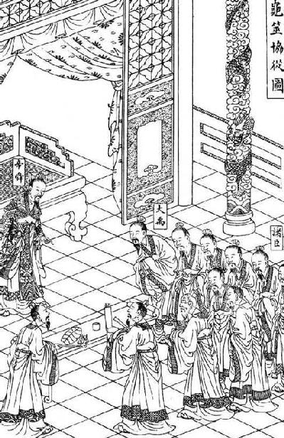
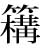
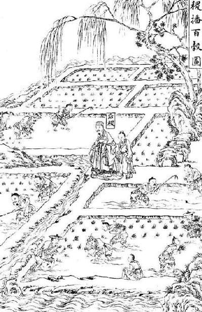

卷一百二十八 龟策列传第六十八
太史公曰：自古圣王将建国受命，兴动事业，何尝不宝【宝；重视。】 卜筮以助善！唐虞以上，不可记已。自三代之兴，各据祯祥【祯祥：吉兆。】 。涂山之兆从【从：吉利。】 而夏启世，飞燕之卜顺故殷兴，百谷之筮吉故周王。王者决定诸疑，参以卜筮，断以蓍龟，不易之道也。
蛮夷氐羌虽无君臣之序，亦有决疑之卜。或以金石，或以草木，国不同俗。然皆可以战伐攻击，推兵【推兵：进军。】 求胜，各信其神，以知来事。
太史公说：从古至今，圣明的君主即将创建国家，领受天命，兴办大业，何尝不重视占卜来协助促成善举的！唐尧和虞舜之前的事，已经无法记载。自从夏、商、周这三代的逐次兴起，各自依照占卜的吉兆作为凭据。涂山氏的卜兆吉利，因此夏打开了自己的时代；飞燕的卜兆吉顺，因此殷族得以兴国；百谷的筮兆吉祥，所以周室才得以称王天下。君王在决定各种疑难的时候，就加以卜筮，用蓍草、龟甲判断吉凶，这是不曾更改的方法。
尽管蛮、夷、氐、羌各族没有君臣上下的等级之分，但是也有决断疑惑的占卜。他们有的是以金石占卜，有的是以草木占卜，各国都有不同的风俗。但是像能否征伐攻击，能否出兵取胜，他们都相信自己所推崇的神灵，以此来预知将来的事。
略闻夏殷欲卜者，乃取蓍龟，已则弃去之，以为龟藏则不灵，蓍久则不神。至周室之卜官，常宝藏蓍龟；又其大小先后，各有所尚，要【要：关键，关窍。】 其归【归：目的。】 等耳。或以为圣王遭事无不定，决疑无不见，其设稽【稽：磕头。】 神求问之道者，以为后世衰微，愚不师智，人各自安，化分为百室，道散而无垠，故推归之至微【至微：微妙的事理。】 ，要絜于精神也。或以为昆虫之所长，圣人不能与争。其处【处：判断。】 吉凶，别然否，多中【中：准确。】 于人。至高祖时，因【因：沿袭。】 秦太卜官。天下始定，兵革未息。及孝惠享国日少，吕后女主，孝文、孝景因袭掌故，未遑【未遑：来不及。遑，闲暇。】 讲试，虽父子畴官，世世相传，其精微深妙，多所遗失。至今上即位，博开艺能之路，悉延百端之学，通一伎之士咸得自效，绝伦超奇者为右，无所阿私，数年之间，太卜大集。会上欲击匈奴，西攘大宛，南收百越，卜筮至预见表象，先图其利。及勐将推锋执节【执节：控制。】 ，获胜于彼，而蓍龟时日亦有力于此。上尤加意，赏赐至或数千万。如丘子明之属，富溢贵宠，倾于朝廷。至以卜筮射【射：揣度。】 蛊道，巫时或颇【颇：有些。】 中。素有眦睚【眦睚：细小的愤怒。】 不快，因公行诛，恣意所伤，以破族灭门者，不可胜数。百僚荡恐【荡恐：恐惧不安。】 ，皆曰龟策能言。后事觉奸穷，亦诛三族。
我粗略听说过夏、殷时期打算占卜的人，便找来蓍草龟甲，占卜结束之后就丢掉它们，认为龟甲一旦收藏起来就不灵了，蓍草用得久了就不神了。等到周王室的卜官占卜后，经常将蓍草和龟甲珍藏起来备用，还有选用蓍草和龟甲的大小及先后，各自有推崇的方法，但是他们的目的却是一样的。有的人认为圣王遇到事情没有无法确定的，定断疑难没有不是明白可见的，他们设置这套求神问卜方法的原因，是担忧后代日渐衰败式微，愚蠢而不愿向聪明的人学习，人人都满足于自身的见识，教化分化出为百家，道理散乱而漫无边际，因此将事理推演归结到最为精细的地方，总括规范到精神上。还有的人认为灵龟这种动物的生长，圣人也不能与它们相比。它们判断吉凶，分辨可否，常常比人还要准确。等到了汉高祖时，沿袭秦朝制度设置了太卜官。天下刚刚统一，战争还未平息。等到了孝惠帝继位，在位的时间很短，吕后是个女君主，孝文帝、孝景帝沿袭旧的制度，没有闲暇探究卜筮的事情。虽然有的父子都担任畴官，世代传承，但是这其中的精微幽深之处，大多已经遗失。等到当今皇上继承帝位，广开艺能的门路，悉迎诸子百家的学说，通晓一门技能的人都可以发挥出自己的长处，技艺绝妙、超群出奇的人更是位列高位，没有任何偏私。几年之内，太卜人才聚集了很多。正赶上皇上打算讨伐匈奴，向西抵御大宛，向南收服百越，卜筮者很精确地预示了各种情况，事先谋划制定好对策。等到勐将在前冲锋，执节指挥战斗，在各个地区都取得大胜，而以蓍草和龟甲卜筮所推算出来的得胜时日对此也大有帮助。于是皇上十分满意，赏赐给卜筮者有的多达几千万钱。像丘子明这些人，富到了极点，尊贵而备受宠幸，其富贵荣宠超过了满朝的公卿大臣。至于利用卜筮来占卜邪术和巫术等行为，有时预测结果也颇为准确。平日里和卜官有些小恩怨的人，都被他们借着公事除掉。卜官随意中伤他人，因此而被破族灭家的人，数不胜数。百官都恐惧不安，都奉承说龟甲、蓍草能够说话。等到后来卜官诛害人的事情被发现，奸计难以奏效，他们也同样被诛灭了三族。
夫摓féng策定数【定数：吉凶。】 ，灼龟观兆【观兆：观察龟甲灼烧后呈现出的裂痕。】 ，变化无穷，是以择贤而用占焉，可谓圣人重事【重事：慎重从事。】 者乎！周公卜三龟，而武王有瘳【瘳：病愈。】 。纣为暴虐，而元龟【元龟：大龟。】 不占。晋文将定襄王之位，卜得黄帝之兆，卒受彤弓【彤弓：朱红色的弓。】 之命。献公贪骊姬之色，卜而兆有口象【口象：口舌祸象。】 ，其祸竟流五世。楚灵将背周室，卜而龟逆【龟逆：龟甲的兆象不吉利。】 ，终被干谿之败。兆应信诚于内，而时人明察见之于外，可不谓两合者哉！君子谓夫轻卜筮，无神明者，悖【悖：迷惑。】 ；背人道，信祯祥【祯祥：吉祥，指占卜。】 者，鬼神不得其正。故《书》建稽疑，五谋而卜筮居其二，五占从其多，明有而不专之道也。
余至江南，观其行事，问其长老，云龟千岁乃游莲叶之上，蓍百茎共一根。又其所生，兽无虎狼，草无毒螫。江傍家人常畜龟饮食之，以为能导引致气，有益于助衰养老，岂不信哉！

龟筮协从图，选自《钦定书经图说》。
捧着蓍草来判断吉凶，灼烧龟甲来察视征兆，变化无穷，因此选择贤德的人来担任卜官，可以说是圣人也非常慎重的事情吧！周公用龟甲占卜了三次，周武王因此而病愈。商纣王以暴虐治国，用大龟占卜也得不到吉兆。晋文公即将恢复周襄王的王位，占卜得到了黄帝之兆，最终接受了朱红色的弓而成为诸侯。晋献公贪图骊姬的美色，占卜得到有口舌之祸的凶象，其灾祸竟然流传了五代。楚灵王想要背叛周天子，占卜时获得不祥之兆，最终在干谿惨败。这样看来，征兆和应验对内诚实地预示，而当时的人能够明察事理，看到外在的结果，怎么能说这不是相互吻合的呢！君子认为那些轻视卜筮，不信任神明的人都非常荒谬；放弃人谋而迷信祥瑞的人，鬼神也难以被公正的看待。所以《尚书》九畤稽疑第七记载，所举五谋要卜和筮其中两种，五谋不一致时，要顺从占多数的意见，这表明虽有卜筮，但并非专信卜筮。
我来到长江以南地区，观察当地百姓的行事，问询当地的长老，他们说龟要活到一千岁才能在莲叶上游戏，蓍草即使有百条枝茎也只有一条根。在龟和蓍草生长的地方，野兽里面没有虎狼，草丛里没有毒虫。住在长江边的人，经常畜养龟这种动物，用食物喂养它们，认为它能为人疏通筋络，增加元气，有助于人们防衰养老，这话难道不可信吗！
褚先生曰：臣以通经术，受业博士，治《春秋》，以高第为郎，幸得宿卫，出入宫殿中十有年。窃好《太史公传》。《太史公之传》曰：“三王不同龟，四夷各异卜，然各以决吉凶，略窥其要，故作《龟策列传》。”臣往来长安中，求《龟策列传》不能得，故之大卜官【大卜官：太卜官。】 ，问掌故文学【文学：官名，主管学校、教导学生之事。】 长老习事者，写取【写取：抄录。】 龟策卜事，编于下方。
褚先生说：我由于通晓经术，跟随博士求学，研习《春秋》，因为成绩优秀而出任郎官，幸运地担任宫廷值宿警卫，出入宫殿已经有十多年了。我很喜欢《太史公传》。《太史公传》中说：“夏、商、周这三代君主用龟占卜的方法各不相同，四方蛮夷所用的占卜习惯也不相同，但是分别都用占卜来判断吉凶。我大概明白其中的关键，因此撰写了《龟策列传》。”我在长安城往来行走，找寻《龟策列传》却没能得到，所以我到太卜官那里去，询问谙熟龟策占卜之事的文学长老们相关的掌故，记录下了解到的龟策占卜的事情，编到了下面。
闻古五帝、三王发动举事，必先决蓍龟。传曰：“下有伏灵【伏灵：即“茯苓”，中药名。】 ，上有兔丝【兔丝：即“菟丝”，一种植物，种子可以入药。】 ；上有捣蓍【捣蓍：丛生的蓍草。】 ，下有神龟。”所谓伏灵者，在兔丝之下，状似飞鸟之形。新雨已，天清静无风，以夜捎兔丝去之，即以 【 ：通“篝”，用竹笼罩火，灯笼。】 烛此地，烛之火灭，即记其处，以新布四丈环置之，明即掘取之，入四尺至七尺，得矣，过七尺不可得。伏灵者，千岁松根也，食之不死。闻蓍生满百茎者，其下必有神龟守之，其上常有青云覆之。传曰：“天下和平，王道得【得：得以实现。】 ，而蓍茎长丈，其丛生满百茎。”方今世取蓍者，不能中古法度，不能得满百茎长丈者，取八十茎已上，蓍长八尺，即难得也。人民好用卦者，取满六十茎已上，长满六尺者，既可用矣。记曰：“能得名龟者，财物归之，家必大富至千万。”一曰“北斗龟”，二曰“南辰龟”，三曰“五星龟”，四曰“八风龟”，五曰“二十八宿龟”，六曰“日月龟”，七曰“九州龟”，八曰“玉龟”：凡八名龟。龟图各有文在腹下，文云云者，此某之龟也。略记其大指，不写其图。取此龟不必满尺二寸，民人得长七八寸，可宝矣。今夫珠玉宝器，虽有所深藏，必见其光，必出其神明，其此之谓乎！故玉处于山而木润，渊生珠而岸不枯者，润泽之所加也。明月之珠出于江海，藏于蚌中， 龙【 龙：蛟龙。，通“蛟”。】 伏之。王者得之，长有天下，四夷宾服。能得百茎蓍，并得其下龟以卜者，百言百当【当：应验。】 ，足以决吉凶。
听说古时的五帝、三王发动兴举的大事之时，一定要提前以蓍草龟甲占卜来做决断。古书上说：“下面有伏苓，上方有菟丝；上面有捣蓍，下方有神龟。”所说的伏苓，在菟丝的下面，形状如同飞鸟。刚下过雨之后，天气晴朗，没有一丝风，趁着夜晚将菟丝割掉，然后用灯笼照着这个地方，火熄灭之后，马上记下这个位置，用四丈新布将这个地方围起来，等到天亮再把它挖出来，挖到四尺至七尺深就能得到它了，要是超过七尺就无法得到了。伏苓，原本是千年古松的根，吃了它的人能够长生不死。听说蓍草长满一百条枝茎的话，它的下面就一定有神龟在守护，它的上方常常有青云笼罩。古书中说：“天下安定和平，王道得以推行，蓍草的茎就能够长到一丈长，丛生的一根能够它长出一百根茎来。”而当今世间用着草占卜的人，不能与古代的法度相合，不能获得长满百茎、长达一丈的蓍草，能够得到八十茎以上、长达八尺的蓍草已经十分不易了。百姓中有喜好卜筮的人，得到六十茎以上、长达六尺的蓍草，就能够使用了。古书中说：“能获得名龟的人，财物都会归他所有，家中一定会大富大贵，得到千万钱。”第一名称作“北斗龟”，第二称作“南辰龟”，第三称作“五星龟”，第四称作“八风龟”，第五称作“二十八宿龟”，第六称作“日月龟”，第七称作“九州龟”，第八称作“玉龟”：一共有这八种名龟。古书里的龟图都会有文字标在龟腹的下方，写明这是谁的龟。我大致记录了它们的要旨，并未摹画那些图。得到这些名龟不用非得身长一尺二寸，百姓能够得到身长达七八寸的，就可以将它当作宝贝了。现在的这些珠玉宝器，纵使进行深藏，也一定能看到它们的光彩，一定能显示它们的神明，说的应该就是这种情况吧！所以山上有美玉，树木就会润泽；深渊生长着珍珠，岸上的草木就不枯萎，那是受到珠玉滋润的缘故。明月般美丽的珍珠出产在江海，藏身在蛤蚌里，蚊龙趴在上面，君主获得了它，就可以长久地拥有天下，四方各族都来臣服。倘若能够获得长有百茎的蓍草，并且获得蓍草之下的神龟，以此来进行卜筮的，一定会百言百中，能够以此来判断吉凶。
神龟出于江水中，庐江郡常岁时生龟长尺二寸者二十枚输【输：送。】 太卜官，太卜官因以吉日剔取其腹下甲。龟千岁乃满尺二寸。王者发军行将，必钻龟庙堂之上，以决吉凶。今高庙【高庙：汉高祖的庙。】 中有龟室，藏内【内：通“纳”，收藏。】 以为神宝。
《传》曰：“取前足臑骨【臑骨：前肢的下半截骨头。】 穿佩之，取龟置室西北隅悬之，以入深山大林中，不惑。”臣为郎时，见《万毕硃方》，传曰：“有神龟在江南嘉林中。嘉林者，兽无虎狼，鸟无鸱枭，草无毒螫，野火不及，斧斤不至，是为嘉林。龟在其中，常巢于芳莲之上。左胁书文曰：‘甲子【甲子：甲子年。】 重光，得我者匹夫为人君，有土正【正：官长。】 ，诸侯得我为帝王。’求之于白蛇蟠杅【蟠杅：盘曲。】 林中者，斋戒以待，譺然【譺然：恭敬诚恳。】 ，状如有人来告之，因以醮酒【醮酒：用酒泼地。】 佗发【佗发：披头散发。】 ，求之三宿而得。”由是观之，岂不伟哉！故龟可不敬与？
南方老人用龟支床足，行【行：经过。】 二十余岁，老人死，移床，龟尚生不死。龟能行气导引。问者曰：“龟至神若此，然太卜官得生龟，何为辄杀取其甲乎？”近世江上人有得名龟，畜置之，家因大富。与人议，欲遣去。人教杀之勿遣，遣之破人家。龟见梦曰：“送我水中，无杀吾也。”其家终杀之。杀之后，身死，家不利。人民与君王者异道。人民得名龟，其状类不宜杀也。以往古故事言之，古明王圣主皆杀而用之。
神龟出产于长江水中，庐江郡每年按照时节将二十只身长达一尺二寸的活龟敬献给太卜官，太卜官会选择吉日剔取龟的腹甲。龟活到千岁时才拥有满一尺二寸的甲。君王每逢调兵遣将，发动战事，一定会在庙堂上钻龟甲占卜，以判定吉凶。如今高祖庙里建有一间龟室，藏着这种龟甲并将其当成神宝。
古书中说：“选取龟的前足骨，穿起来佩戴在身上，将龟悬挂在房间的西北角，这样就算走进深山老林里，也不会迷路。”我担任郎官时，读过《万毕方》中的石朱方，上面说：“有一种神龟在江南的嘉林中生活。嘉林，就是野兽中没有虎狼，鸟群中没有猫头鹰，草丛中没有毒草恶虫，野火烧不到，斧头砍不到的树林。龟处身嘉林中，经常在芳莲的上面筑巢。龟的左胁下写的文字说：‘甲子年的日冕重光之时，获得我的人，普通人也能成为获得封地的官长；诸侯如果能得到我就可以做帝王。’来到白蛇盘曲的林中寻找神龟的人，斋戒之后等在这里，十分恭敬，那情形就如同有人来告知他神龟的消息一般，于是将酒洒到地上，披头散发，乞求三天三夜才能得到神龟。”由此来说，这迎取神鬼的仪式多么宏伟壮观！所以我们难道可以不尊敬龟吗？
南方的一位老人用龟支撑床腿，过去二十几年，老人去世，将床移开，龟仍然活着没有死去。龟自身能够行气呼吸。有人询问说：“龟能够神通到这种程度，那太卜官获得了活着的龟，为什么还要杀了它，取下它的甲呢？”不久前长江边有个人获得了一只名龟，把它养起来，家中因此而发了大财。他与别人商量，打算把龟放生。有人让他将龟杀死，别放生，如果将龟放走的话就会家破人亡。龟给他托梦说：“将我送我水里，不要杀我。”那户人家最终还是将龟杀掉了。杀了龟之后，这个人就死了，家中也不复往日的吉祥富贵。百姓与君主处事的道理并不相同。百姓获得名龟，看情况似乎不应该杀死它。而按照古代的惯例来看，古时的明君圣主都是杀死名龟然后利用龟甲占卜。
宋元王【宋元王：指宋元公。】 时得龟，亦杀而用之。谨连其事于左方，令好事者观择其中焉。
宋元王二年，江使神龟使于河，至于泉阳，渔者豫且举网得而囚之。置之笼中。夜半，龟来见梦于宋元王曰：“我为江使于河，而幕网当吾路。泉阳豫且得我，我不能去。身在患中，莫可告语。王有德义，故来告诉。”元王惕然而悟。乃召博士卫平而问之曰：“今寡人梦见一丈夫【丈夫：成年男子。】 ，延颈而长头，衣玄绣之衣【玄绣之衣：黑色且绣花的衣服。】 而乘辎车，来见梦于寡人曰：‘我为江使于河，而幕网当吾路。泉阳豫且得我，我不能去。身在患中，莫可告语。王有德义，故来告诉。’是何物也？”卫平乃援式【援式：拿起星盘。式，即“栻”。】 而起，仰天而视月之光，观斗【斗：北斗星的斗柄。】 所指，定日处乡。规矩为辅，副以权衡。四维【四维：东南、东北、西南、西北。】 已定，八卦相望。视其吉凶，介虫【介虫：指龟。】 先见。乃对元王曰：“今昔壬子，宿在牵牛。河水大会，鬼神相谋。汉正南北，江河固期，南风新至，江使先来。白云壅汉，万物尽留。斗柄指日，使者当囚。玄服而乘辎车，其名为龟。王急使人问而求之。”王曰：“善。”
于是王乃使人驰而往问泉阳令曰：“渔者几何家？名谁为豫且？豫且得龟，见梦于王，王故使我求之。”泉阳令乃使吏案籍视图，水上渔者五十五家，上流之庐，名为豫且。泉阳令曰：“诺。”乃与使者驰而问豫且曰：“今昔汝渔何得？”豫且曰：“夜半时举网得龟。”使者曰：“今龟安在？”曰：“在笼中。”使者曰：“王知子得龟，故使我求之。”豫且曰：“诺。”即系龟而出之笼中，献使者。
宋元王时获得了一只龟，也将龟杀掉后再利用它。我谨将这件事接着记录到下面，供有兴趣的人阅读参考。
宋元王二年（前530年），长江之神派神龟出使黄河，到达泉阳时，渔夫豫且撒下网捕捉到了神龟，并将它囚禁在笼子里面。等到半夜，神龟给宋元王托梦说：“我替长江之神出使黄河，但是被鱼网阻拦了去路。泉阳人豫且捉住了我，我没有办法离开。陷于灾难之中，无处求救。君王是有德义之人，所以我来向您求救。”元王很快就醒了过来，于是召来博士卫平，向他询问道：“今晚我做梦梦到一名男子，伸长脖子，头长长的，身穿带有刺绣的黑色衣服，乘坐辎车，来给我托梦说：‘我替长江之神出使黄河，却被鱼网阻挡了去路。泉阳人豫且捉住了我，我无法离开。身陷患难之中，无处求救。君王是有德义之人，因此我来向您求救。’这是什么东西呢？”于是卫平便取出占卜用具站了起来，抬头看天，仰视月光，观测北斗星的斗柄所指的方向，估算太阳在天空里所处的位置。以圆规和矩尺当作辅佐，还用上了秤锤和秤杆。已然确定了东南、东北、西南、西北这四个方位，干、坤、震、巽、坎、离、良、兑八卦也都各在其位，彼此相望。观测其所呈现出来的吉凶，甲介之虫最先显现出来。于是卫平就对元王说：“昨晚是壬子日，星宿为牵牛。这是黄河大水相会，鬼神相谋之时。银河处于南北方向，长江之神和黄河之神本来相约，南风刚来的时候，长江之神的使者先来拜谒黄河之神。此时白云壅塞住了天河，万物都被滞留不前。北斗星的斗柄指向太阳，江神的使者应该是被囚禁了。您梦见的身穿黑衣且乘坐辎车的，它的名字就是龟。君王尽快派人去打问并找到它。”元王说：“好。”
于是元王就派人乘车飞驰前往泉阳，询问泉阳县令说：“县里有多少户渔民？谁叫豫且这个名字？豫且捕获一只龟，这只龟给君主托梦，因此君主派我前来寻找它。”泉阳令于是命县吏查阅户籍簿和地图，发现沿水的渔民有五十五家，上游有一间小屋，主人的名字叫豫且。泉阳令说：“很好。”就与使者一同飞驰前去询问豫且说：“昨晚你捕鱼获得了什么？”豫且说：“半夜的时候撒下网捉到了一只龟。”使者问：“如今龟在哪？”豫且说：“在笼子中。”使者说：“君王知道你获得了这只龟，因此派我前来求取它。”豫且说：“可以。”随即将龟拴起来，从笼里取出，交给了使者。
使者载行，出于泉阳之门。正昼无见，风雨晦冥【晦冥：光线昏暗。】 。云盖其上，五采青黄；雷雨并起，风将【将：吹。】 而行。入于端门【端门：宫殿南面的正门。】 ，见于东箱【东箱：东厢房。】 。身如流水，润泽有光。望见元王，延颈而前，三步而止，缩颈而却，复其故处。元王见而怪之，问卫平曰：“龟见寡人，延颈而前，以何望也？缩颈而复，是何当也？”卫平对曰：“龟在患中，而终昔囚，王有德义，使人活之。今延颈而前，以当谢也，缩颈而却，欲亟去也。”元王曰：“善哉！神至如此乎，不可久留；趣驾送龟，勿令失期。”
卫平对曰：“龟者是天下之宝也，先得此龟者为天子，且十言十当，十战十胜。生于深渊，长于黄土。知天之道，明于上古。游三千岁，不出其域。安平静正，动不用力。寿蔽天地，莫知其极。与物变化，四时变色。居而自匿，伏而不食。春仓【仓：通“苍”，青色。】 夏黄，秋白冬黑。明于阴阳，审【审：明白。】 于刑德。先知利害，察于祸福，以言而当，以战而胜，王能宝之，诸侯尽服。王勿遣也，以安社稷。”
使者载着龟离开，从泉阳城门出来。正值白天天色却突然暗了下来，紧接着风雨齐至，天昏地暗。云彩覆盖其上，五彩斑斓；雷雨交加，大风呼啸随之前行。车子行进到王宫的端门，元王在东偏殿见到这只龟。龟身如同流水一般，润泽而有光彩。龟看到元王，抻长脖子向前爬，爬三步就停了下来，又将脖子缩了回去向后退，回到它之前所在的位置。元王看到这种情况觉得十分奇怪，询问卫平说：“龟看到我，把脖子伸长向前爬行，它在看什么？又缩回脖子退回原地，这又表示什么呢？”卫平回答说：“龟陷于患难之中，且被囚禁了一整夜，君王是有德义的人，派人将它救下来。如今它把脖子伸长向前爬行，表示对您的感谢，又缩回脖子向后退去，是希望快些离去。”元王说：“好！龟的神灵居然到了这样的地步，不能久留它，尽快驾上车把神龟送走，不要让它耽搁了期限。”
卫平回答说：“龟是天下的宝物，率先获得这只龟的人就能够成为天子，而且所言无不应验，所战无不胜利。龟在深渊出生，在黄土生长。通晓上天的大道，明了上古之事。在世间游历三千年，也不离开它所居住的区域。龟静气平和，中正端庄，行动自如，不用蛮力。寿命与天地相齐，没人知道它寿命的极限是多少。它与万物一同变化，跟随四季而改变颜色。闲来无事的时候就自己藏起来，伏在一边不吃任何东西。春天呈现青色，夏天呈现黄色，秋天呈现白色，冬天呈现黑色。龟精通阴阳之辩，能够审察刑德，预知利害，察知祸福。用它来言说事理一定切中要害，用它占卜战事一定能够取得胜利。君王倘若将它视为珍宝，各诸侯都会前来臣服。还请大王别把它送走，用它来安定社稷。”
元王曰：“龟甚神灵，降于上天，陷于深渊。在患难中。以我为贤。德厚而忠信，故来告寡人。寡人若不遣也，是渔者也。渔者利其肉，寡人贪其力【贪其力：贪求它的神力。】 ，下为不仁，上为无德。君臣无礼，何从有福？寡人不忍，奈何勿遣！”
卫平对曰：“不然。臣闻盛德不报【盛德不报：因为恩德太大了所以就不回报了。】 ，重寄不归【重寄不归：替人保管的东西太贵重了所以就不归还了。】 ；天与不受，天夺之宝。今龟周流【周流：周游。】 天下，还复其所，上至苍天，下薄【薄：迫近。】 泥涂。还遍九州，未尝愧辱，无所稽留。今至泉阳，渔者辱而囚之。王虽遣之，江河必怒，务求报仇。自以为侵，因神与谋。淫雨不霁，水不可治。若为枯旱，风而扬埃，蝗虫暴生，百姓失时。王行仁义，其罚必来。此无佗故【佗故：其他缘故。佗，通“他”。】 ，其祟【祟：作祟。】 在龟。后虽悔之，岂有及哉！王勿遣也。”
元王慨然而叹曰：“夫逆【逆：阻拦。】 人之使，绝【绝：断绝。】 人之谋，是不暴乎？取人之有，以自为宝，是不强乎？寡人闻之，暴得者必暴亡，强取者必后无功。桀纣暴强，身死国亡。今我听子，是无仁义之名而有暴强之道。江河为汤武，我为桀纣。未见其利，恐离【离：通“罹”，罹难。】 其咎。寡人狐疑，安事此宝，趣驾送龟，勿令久留。”
元王说：“这龟很是神灵，从天而降，身陷在深渊之中。身处患难，将我看成是贤德之人。认为我仁德宽厚且忠诚守信，所以向我求救。要是我不送它离开，那么就和那个渔民没什么区别了。渔民想要用它的肉体谋取利益，我贪图的是它的神力，在下位的百姓没有仁义，在上位的君臣没有道德。君臣都不遵从礼制，从哪里得到福气呢？我很不忍心，怎么可以不把它送走！”
卫平回答说：“并非如此。我听说过，恩德深厚就无须回报了，寄存的物品过于贵重就无需归还；如果上天赐予的没有接受，那么上天就会夺回这个宝物。如今这龟周游天下，还要返回原处，向上抵达苍天，向下迫近泥涂。游历九州，从未受过愧辱，没被任何东西阻拦。如今来到泉阳，渔民侮辱并囚禁它。纵使君王把它送走，长江之神和黄河之神也一定会发怒，想要谋求报仇。龟因为自身受到侮辱，就会与神灵谋划。要么久雨不晴，洪水难治。要么干旱，风吹尘起，蝗虫成灾，百姓失掉农时。尽管君王施行仁义，但这种惩罚一定会来临。这并没有别的原因，只是这只龟在作祟。以后纵使后悔，如何能来得及呢！君王请别把它送走。”
元王感慨地叹息说：“阻拦他人的使者，破坏他人的计划，这难道不是残暴吗？夺得他人的东西，将它当作自己的宝贝，这难道不是强横吗？我曾听说，用残暴手段获得的东西必定会被残暴地夺走，以强横的态度夺来的东西最后必然一无所获。夏桀和商纣残暴强横，所以身死而国亡。如今我听了您的话，这就失去了仁义的美好名声，而有了残暴强横的行为。长江之神、黄河之神成了商汤和周武，我则成了夏桀和商纣。没有看到神龟所带来的利益，恐怕反倒会遭受它所带来的灾难。我心中有很多疑惑，如何能侍奉这个宝贝，快点驾上车把龟送走，别再让它久留。”
卫平对曰：“不然，王其无患。天地之间，累石为山。高而不坏，地得为安。故云物或危而顾【顾：反倒。】 安，或轻而不可迁【迁：转移，移动。】 ；人或忠信而不如诞谩【诞谩：放荡欺瞒，这里指满嘴谎话。】 ，或丑恶而宜大官，或美好佳丽而为众人患。非神圣人，莫能尽言。春秋冬夏，或暑或寒。寒暑不和，贼气相奸。同岁异节，其时使然。故令春生夏长，秋收冬藏。或为仁义，或为暴强。暴强有乡【乡：对象，目标。】 ，仁义有时。万物尽然，不可胜治。大王听臣，臣请悉言之。天出五色，以辨白黑。地生五谷，以知善恶。人民莫知辨也，与禽兽相若。谷居而穴处，不知田作。天下祸乱，阴阳相错，匆匆疾疾，通而不相择。妖孽数见，传为单薄。圣人别其生，使无相获。禽兽有牝牡，置之山原；鸟有雌雄，布之林泽；有介【介：甲壳。】 之虫，置之溪谷。故牧人民，为之城郭，内经闾术【闾术：里巷街道。】 ，外为阡陌【阡陌：田间的小路。】 。夫妻男女，赋【赋：赋予。】 之田宅，列其室屋。为之图籍【图籍：户籍。】 ，别其名族。立官置吏，劝以爵禄。衣以桑麻，养以五谷。耕之耰【耰：翻土。】 之，锄之耨【耨：除草。】 之。口得所嗜，目得所美，身受其利。以是观之，非强不至。故曰田者不强，囷qūn仓【囷仓：粮仓。】 不盈；商贾不强，不得其赢；妇女不强，布帛不精；官御不强，其势不成；大将不强，卒不使令；侯王不强，没世无名。故云强者，事之始也，分之理也，物之纪也。所求于强，无不有也。王以为不然，王独不闻玉椟只雉，出于昆山；明月之珠，出于四海；镌【镌：凿开。】 石拌【拌：剖开。】 蚌，传卖于市；圣人得之，以为大宝。大宝所在，乃为天子。今王自以为暴，不如拌蚌于海也；自以为强，不过镌石于昆山也。取者无咎，宝者无患。今龟使来抵网，而遭渔者得之，见梦自言，是国之宝也，王何忧焉。”
卫平回答说：“并非如此，请君王不要担心。在天地之间，石头堆积起来才成为高山。山很高但是并不会倒塌，大地因此才能安稳。所以说事物有时看起来很危险反倒很安全，有的看起来很轻却并不能转移；有的人虽然忠诚守信反倒不如欺诈放诞的，有的人纵使丑陋恶劣但是非常适合做大官，有的人尽管美好漂亮却成为众人的祸患。倘若不是神圣之人，没有人能够说清其中的道理。春、秋、冬、夏，有时酷热，有时寒冷。寒暑并不融和，邪气相互冲突。同属一年，季节却有不同，这是由各自的时令决定的。因此使得春生夏长，秋收冬藏。有的人仁义，有的人强暴。强暴之人有他能够发泄的对象，仁义之人有他得以施行的时候。万物都是如此，不能深究。大王要是听取我的意见，请允许我全面地说说这件事。上天现呈出五色，以此分辨黑白。大地生出五谷，是以此来察知善恶。人们不懂得辨别，这就与禽兽相像。在山谷和洞穴中居住，不知道种田耕作。天下灾祸不断，阴阳彼此相错，匆匆忙忙地生活，彼此相通并不加以选择。妖孽多次出现，传宗接代的力量十分薄弱。圣人对各种生物进行辨别，让它们不再相互攻击擒获。禽兽有牝牡之分，将它们安置到山林和原野；禽鸟有雄雌之分，将它们安置到树林和水泽；带甲壳的虫类，将它们安置到河流和溪谷。因此圣人管理人民，为他们修建城郭，在城里分出大街小巷，在城外修好田间小道。夫妻男女，分给他们田地和住宅，将住房排列起来。为他们造册创建户籍，分别登记他们的名姓和家族。设置官吏，用爵位和俸禄奖励他们。种植桑麻给他们制成衣服，播种五谷供他们食用，耕种田地，锄地除草。人们的口中能吃到爱吃的食物，眼里能看到美好的事物，身受衣食的方便。由此看来，不依靠强力，很难达到目的。因此说，农夫不强，谷仓难以盈满；商人不强，就无法获得利润；妇女不强，就织不出精美的布帛；官吏不强，就无法形成自己的权势；大将不强，士卒不会听命；王侯不强，终生都没名声。因此说强者，是创建事业的开端，是名分的基础，是万物的规矩。以强力去谋求，没有什么无法达到。大王觉得并非如此，可您难道没听说：雉鸟玉匣，出自昆山；明月之珠，出自四海；凿刻玉石而成玉匣，剖取蚌壳而得珍珠，拿到市场中贩卖。圣人获得它们，将它们视为贵重的宝物。拥有宝物的那个人，就会成为天子。如今您将留下神龟看成是残暴，倒不如从大海里寻蚌取珠；您将留下神龟看成是强横，却没超过从昆山中凿刻玉石。那些凿取玉匣和蚌珠的人没有错，珍藏玉匣和蚌珠的人也没有错。如今神龟使者自己落入网中，而被渔民得到，神龟托梦给您自述，这是我国的宝贝，君王有什么担忧的呢？”
元王曰：“不然。寡人闻之，谏者福也，谀者贼也。人主听谀，是愚惑也。虽然，祸不妄至，福不徒来。天地合气，以生百财。阴阳有分，不离四时，十有二月，日至为期。圣人彻【彻：透彻，贯通。】 焉，身乃无灾。明王用之，人莫敢欺。故云福之至也，人自生之；祸之至也，人自成之。祸与福同，刑与德双。圣人察之，以知吉凶。桀纣之时，与天争功，拥【拥：拥堵。】 遏鬼神，使不得通。是固已无道矣，谀臣有【有：通“又”。】 众。桀有谀臣，名曰赵梁。教为无道，劝以贪狼。系汤夏台，杀关龙逢。左右恐死，偷谀于傍。国危于累卵，皆曰无伤。称乐万岁，或曰未央。蔽其耳目，与之诈狂【诈狂：狡诈疯狂。】 。汤卒伐桀，身死国亡。听其谀臣，身独受殃。春秋着之，至今不忘。纣有谀臣，名为左强。夸而目巧，教为象郎。将至于天，又有玉床。犀玉之器，象箸而羹【羹：吃饭。】 。圣人剖其心，壮士斩其胻héng【胻：小腿。】 。箕子恐死，被发佯狂。杀周太子历，囚文王昌。投之石室，将以昔至明。阴兢【阴兢：周大夫。】 活之，与之俱亡。入于周地，得太公望。兴卒聚兵，与纣相攻。文王病死，载尸【尸：周文王的牌位。】 以行。太子发代将，号为武王。战于牧野，破之华山之阳。纣不胜败而还走，围之象郎。自杀宣室，身死不葬。头悬车轸，四马曳行。寡人念其如此，肠如涫汤【涫汤：沸腾的开水。】 。是人皆富有天下而贵至天子，然而大傲。欲无猒yàn【猒：通“厌”，满足。】 时，举事而喜高，贪很而骄。不用忠信，听其谀臣，而为天下笑。今寡人之邦，居诸侯之间，曾不如秋毫。举事不当，又安亡逃！”
元王说：“不是这样的。我听说：直言谏诤的人是国家的福泽，谗谀谄媚的人是国家的祸端。君主听信谗谀谄媚的话，是十分愚蠢煳涂的。即使这样，灾祸也不会没有缘故地降临，幸福也不会毫无原因地来到。天地元气相合，生出世间财富。阴阳有所分别，不能离开一年四季，十二个月，日子一到就是一个周期。圣人明了这个道理，自身才会无灾无难。圣明之君利用这个道理，没有谁能够欺骗他。所以说幸福能够来到，人们要依靠自己去创造；灾难即将降临，也是人们自身行为所导致的。灾难总和幸福同在，刑罚和赏赐也是相辅相成的。圣人明辨这个道理，所以才知道吉凶。夏桀、商纣之时，和上天争夺功劳，阻拦鬼神行动，让他们不得交流沟通。这原本就已经残暴无道了，而谗谀之臣又非常多。夏桀身边有位谗臣，他的名字叫赵梁。他怂恿夏桀做些残暴无道的事情，劝说他像狼一样贪婪，将商汤在夏台囚禁，杀掉了关龙逢。左右的侍臣都害怕被杀，都在一旁献媚谗谀。国家如同堆起来的鸡蛋一样危险，人人却都说着并不要紧。高呼赞美着万岁，欺骗说国运未到尽头。蒙蔽夏桀的耳目，与他一同欺诈颠狂。商汤最终讨伐夏桀，夏桀被杀死，国家覆灭。夏桀宠信赵梁这样的谗臣，独自承受祸殃。《春秋》记录下这件事，到现在仍让人难以忘记。商纣王有一位谗谀之臣，他的名字叫左强，口才很好而且很会看眼色，唆使纣王修建象廊，象廊高耸直入云天，还放置了玉床。用犀牛角与美玉制成的器物盛物，用象牙制的筷子吃饭。挖掉了圣人比干的心脏，砍掉了壮士的小腿。箕子唯恐被杀掉，披头散发，装作癫狂。商纣杀掉了周太子厉，拘禁了周文王昌。将文王关进了石室，打算把他从夜里囚禁到天明。阴兢救出了文王，与他一同逃走。文王来到周地，得到太公望。他发动士卒，聚集军队，与商纣交战。文王生病死去，士兵们载着他的牌位继续前进。太子发替代父王成为统帅，号为武王。武王在牧野和纣王交战，在华山以南击溃了纣军。纣王没能取得胜利，兵败撤走，武王将他围困在象廊。纣王在宣室自杀身亡，死去之后也没能被埋葬。头被挂在了车子的横梁之上，由四匹马拖拽着前行。每当我想起纣王这样的结局，心中难过得如同沸腾的水一样翻滚不休。这些人都曾拥有天下且尊贵到成为天子，只是太过傲慢。欲望从没有过满足的时候，做什么事都喜欢好高骛远，贪婪暴戾而又骄傲奢侈。不任用那些忠诚守信的人，反倒听信那些谗谀谄媚的臣下，被天下人所耻笑。如今我的封地在各诸侯国之间，如同秋季鸟兽的毫毛一样微小。如果有一件事处置的不够妥当，又如何能够逃脱灾难！”
卫平对曰：“不然。河虽神贤，不如昆仑之山；江之源理【源理：源流。】 ，不如四海，而人尚夺取其宝，诸侯争之，兵革为起。小国见亡，大国危殆，杀人父兄，虏人妻子，残国灭庙，以争此宝。战攻分争，是暴强也。故云取之以暴强而治以文理，无逆四时，必亲贤士；与阴阳化，鬼神为使【为使：听他驱使。】 ；通于天地，与之为友。诸侯宾服，民众殷喜【殷喜：富裕喜悦。】 。邦家安宁，与世更始【更始：重新开始。】 。汤武行之，乃取天子；《春秋》着之，以为经纪【经纪：准则。】 。王不自称汤武，而自比桀纣。桀纣为暴强也，固以为常。桀为瓦室【瓦室：用瓦做屋顶的房子。】 ，纣为象郎。征丝灼之，务以费氓【费氓：耗费民资。】 。赋敛无度，杀戮无方。杀人六畜，以韦【韦：熟牛皮。】 为囊。囊盛其血，与人悬而射之，与天帝争强。逆乱四时，先百鬼尝。谏者辄死，谀者在傍。圣人伏匿，百姓莫行。天数枯旱，国多妖祥【妖祥：妖异的征兆。】 。螟虫岁生，五谷不成。民不安其处，鬼神不享。飘风日起，正昼晦冥。日月并蚀，灭息无光。列星奔乱，皆绝纪纲。以是观之，安得久长！虽无汤武，时固当亡。故汤伐桀，武王克纣，其时使然。乃为天子，子孙续世；终身无咎，后世称之，至今不已。是皆当时而行，见事而强，乃能成其帝王。今龟，大宝也，为圣人使，传之贤王。不用手足，雷电将之；风雨送之，流水行之。侯王有德，乃得当之。今王有德而当此宝，恐不敢受；王若遣之，宋必有咎。后虽悔之，亦无及已。”
卫平回答说：“并非如此。尽管黄河尽管又神又贤明，但是比不上昆仓山；长江的源头虽然畅通，却不如四海。而且人们尚能夺取昆山和四海的宝物，天下诸侯争抢它们，战事因此而兴起。小国被攻灭，大国陷入危险，杀掉别人的父母兄弟，抢走他人的妻儿子女，攻破他国国土，捣毁别国宗庙，来争抢这些宝物。攻伐抢夺，这就是强暴。所以说取之用强暴的手段，治理则要运用文明的教化。不要违背四时的秩序，一定要亲近贤士；与阴阳一同变化，鬼神也可以被驱使；和天地相沟通，与它们作朋友。天下诸侯都来臣服，百姓生活殷实而欢喜。国家安定祥宁，和世道一同除旧迎新。商汤和周武运用这样的办法，就夺取了天子之位。《春秋》记录下这件事，把它当成规范准则。大王并未把自己称为商汤、周武，却将自己比成是夏桀、商纣。夏桀、商纣施政残暴而强横，本就把这些当成了常事。夏桀修造瓦室，商纣筑建象廊。征用丝帛当柴烧掉，一心想劳民伤财。征税收赋，毫无限度，杀戮百姓，有失法则。他们杀掉百姓的牲畜，用熟牛皮制成袋子，在袋子中装满牲畜的血液，和别人一同悬挂起盛血的皮袋并用弓箭去射，和上天争强。扰乱四时的秩序，在祭祀众神鬼前抢先品尝四时产物。劝谏之人常被杀死，谄媚之臣留在身旁。圣人都归隐起来，百姓没有人外出。天时屡次大旱，国内多有妖孽。蝗灾每年都会发生，五谷总是难以丰登。百姓无法安居乐业，鬼神不能享受祭品。每天都有大风刮起，白昼也是昏天黑地。日食连着月食，熄灭再无光亮。群星乱行不遵轨道，纲纪秩序全都扰乱。由此看来，夏桀和商纣的统治如何能够长久！纵使没有商汤和周武，到了时日也自会灭亡。所以商汤讨伐夏桀，武王击败商纣，是当时形势发展的结果。商汤和周武王这才成为天子，子孙后代也都相继为王；终身都无过错，后人都称赞他们，一直到今天都没有停止。这都是顺应时势而行动，用强力处理事请，这样才能成为帝王。如今这只神龟是尊贵的宝物。作为圣人的使者，传给了圣明的贤主。神龟不需要动用手脚，雷电就能伴随它，风雨就会护送它，流水就会漂行它。侯王是有仁德的人，才能够接受它。如今君王是有仁德的人，才能获得这个宝物，却害怕而不敢接受；倘若您把它送走，宋国一定会有灾难。今后纵使后悔，也都来不及了。”
元王大悦而喜。于是元王向日而谢，再拜而受。择日斋戒，甲乙最良【最良：最吉祥。】 。乃刑白雉，及与骊羊；以血灌龟，于坛中央。以刀剥之，身全不伤。脯酒礼之，横其腹肠。荆支卜之，必制其创【创：裂痕，裂纹。】 。理达于理，文相错迎【错迎：交错。】 。使工占之，所言尽当。邦福重宝，闻于傍乡。杀牛取革，被郑之桐。草木毕分，化为甲兵【甲兵：武器。】 。战胜攻取，莫如元王。元王之时，卫平相宋，宋国最强，龟之力也。
元王于是十分高兴。因此元王就面对着太阳拜谢，拜了两次才接受神龟。选好吉日进行斋戒，甲乙两天最为吉祥。于是杀掉白雉鸡和黑羊，用它们的血浇灌神龟，在祭坛正中用刀剖开神龟，保全龟身完整没有受伤。用干肉和美酒放在龟的身旁作为祭品祭拜它。用点燃的荆木枝烧灼龟甲进行占卜，直到龟甲上出现裂痕。依理使它合于自然，纹理纵横交错。命令卜官进行占卜，所说的话都十分恰当。国家里藏着重宝，声名传遍了邻邦。杀牛以取得皮革，蒙到郑国产的桐木之上，战鼓因此制成。草木依照性质各自制成甲胄兵器。战即胜，攻即克，谁都比不上元王。元王治理宋国时，卫平担任宋国宰相，宋国在诸侯国中最是强大，这就是神龟的力量。
故云神至能见梦于元王，而不能自出渔者之笼。身能十言尽当，不能通使于河，还报于江。贤能令人战胜攻取，不能自解于刀锋，免剥刺之患。圣能先知亟【亟：迅速，快速。】 见，而不能令卫平无言。言事百全，至身而挛。当时不利，又焉事贤！贤者有恒常，士有适然。是故明有所不见，听有所不闻。人虽贤，不能左画方，右画圆；日月之明，而时蔽于浮云。羿名善射，不如雄渠、蜂门；禹名为辩智，而不能胜鬼神。地柱折，天故【故：通“固”，本来，原本。】 毋椽，又奈何责人于全？孔子闻之曰：“神龟知吉凶，而骨直空枯。日为德而君于天下，辱于三足之乌。月为刑而相佐，见食于虾蟆。猬【猬：刺猬。】 辱于鹊，腾蛇【腾蛇：会飞的蛇。】 之神而殆于即且。竹外有节理，中直空虚；松柏为百木长，而守门闾【闾：里巷的大门。】 。日辰不全，故有孤虚【孤虚：术数用语。戌亥称为孤，辰巳称为虚。】 。黄金有疵，白玉有瑕。事有所疾，亦有所徐。物有所拘【拘：局限，短处。】 ，亦有所据【据：长处。】 。罔有所数cù【数：密。】 ，亦有所疏。人有所贵，亦有所不如。何可而适乎？物安可全乎？天尚不全，故世为屋，不成三瓦而陈之，以应之天。天下有阶，物不全乃生也。”
所以说龟的神灵能够到托梦给元王的境地，但却无法自己从渔民的牢笼中逃走。自身可以十言全中，却无法通使黄河之神，回报长江之神。它的贤能能够让人战即胜，攻即克，却无法自己从刀锋下逃脱，得免被剥割的灾难。它的圣哲的智慧可以先知先觉，迅速预见祸福，却无法令卫平不说话。预言事情无不周全，自身却被人捆缚拘禁。遇到坏时机不能趋利避害，又如何能够侍奉贤者！贤明的人有自己的常规，士人有适合自身的言行。所以说，视力很好也会有无法看见的地方，耳朵灵敏也有难于听到的事情。人虽然贤明，也无法同时左手画方，右手画圆；日月光明无比，但有时仍然会被浮云所遮蔽。后羿善射的名声在外，却不如雄渠和蜂门；大禹的善辩与智慧十分有名，却无法战胜鬼神。地柱折断，天原本就没有椽子，又如何能对人求全责备呢？孔子听到了神龟这件事情之后说：“神龟能够预知吉凶，但骨头却是直的，内里干枯。太阳普降仁德而成为天下的君王，却被三足乌鸦羞辱。月亮主管刑罚以辅佐太阳，却被蛤蟆吞食。刺猬被喜鹊侮辱，腾蛇拥有神通却遭难在蜈蚣足下。竹子外表有竹节和纹理，但腹中却直而空；松柏可算是百木的首领，但却往往守护大门。日辰干支并不齐全，因此有了孤虚之法。黄金有疵，白玉有瑕。事情有迅疾的，也有徐缓的。万物都有它的短处，也有它的长处。渔网的网眼有细密的，也有粗疏的。人都有可贵的地方，也都有不尽如人意的地方。如何能够恰好合适呢？事物怎么可能尽善尽美呢？上天尚且不够完整，所以世人修建住房时，要少放三块瓦片，以便和上天的不完整相合。天下事物如同台阶有高低之分，万物有所缺陷才能生存。”
褚先生曰：渔者举网而得神龟，龟自见梦宋元王，元王召博士卫平告以梦龟状，平运式，定日月【定日月：推定日月所在的位置。】 ，分【分：区分，分辨。】 衡度，视吉凶，占龟与物色同，平谏王留神龟以为国重宝，美矣。古者筮必称龟者，以其令名【令名：美好的名声。】 ，所从来久矣。余述而为传。
三月 二月 正月 十二月 十一月 中关内高外下 四月 首仰【首仰：兆象首端为仰起状。】 足开【足开：兆象足端为开放状。】 肣qín开【肣开：当为“足肣”，兆象足端为闭合状。】 首俯大 五月 横吉 首俛大 六月 七月 八月 九月 十月
褚先生说：渔夫撒下渔网捕获了神龟，神龟自己给宋元王托梦，元王召来博士卫平并将梦中所见龟的情况告诉他。卫平进行卜筮，测定日月的位置，辨别轻重和长短，观察吉凶之兆，占卜预知神龟与元王梦中所见之物的颜色相同。卫平劝谏元王将神龟留下，并把它当作国家的贵重宝物，这事很好啊。古时提到占卜一定会说到龟，是因为龟有灵验的好名声，这事从古至今已经很长时间了。我将它记述下来撰写了这篇传记。
三月 二月 正月 十二月 十一月 中关内高外下 四月 首仰 足开 肣开 首俯大 五月 横吉 首俛大 六月 七月 八月 九月 十月
卜禁曰：子亥戌不可以卜及杀龟。日中如食【食：日食。】 已【已：停止。】 卜。暮昏【暮昏：黄昏。】 龟之徼也，不可以卜。庚辛可以杀，及以钻之。常以月旦祓【祓：通过沐浴斋戒祛除灾害。】 龟，先以清水澡【澡：清洗。】 之，以卵祓之，乃持龟而遂【遂：占卜。】 之，若常以为祖。人若已卜不中，皆祓之以卵，东向立，灼以荆若刚木，土卵指之者三，持龟以卵周环之，祝曰：“今日吉，谨以粱卵焍黄祓去玉灵【玉灵：敬称，指龟。】 之不祥。”玉灵必信以诚，知万事之情，辩兆皆可占。不信不诚，则烧玉灵，扬其灰，以征【征：通“惩”，惩戒。】 后龟。其卜必北向，龟甲必尺二寸。
卜先以造灼钻，钻中已，又灼龟首，各三；又复灼所钻中曰正身，灼首曰正足，各三。即以造三周龟，祝曰：“假之玉灵夫子。夫子玉灵，荆灼而心，令而【而：你。】 先知。而上行于天，下行于渊，诸灵数箣，莫如汝信。今日良日，行一良贞【良贞：好的占卜。】 。某欲卜某，即【即：如果。】 得而喜，不得而悔。即得，发乡我身长大，首足收人皆上偶【上偶：对称且上扬。】 。不得，发乡我身挫折【挫折：短小且曲折。】 ，中外不相应，首足灭去。”
占卜的禁忌有：每天的子时、亥时和戌时不能占卜及杀龟。白天倘若出现日食要中止占卜。暮色深沉，已近黄昏，龟缴绕难明，不可以占卜。庚日和辛日能够杀龟，也可以在龟甲上钻凿。通常在每个月的初一驱除龟的不祥，先以清水为龟清洗，再用鸡蛋在龟身上摩擦，然后才拿着龟进行占卜，并且把这种方法当作用龟占卜的常法。人们要是占卜之后并不应验，就用鸡蛋摩擦祓除龟的不祥，面朝东方站立，使用荆枝或是硬木烧灼龟甲，又用土制成蛋形，对着龟指三次，再拿着龟用土蛋围着它，祝祷说：“今天是大吉大利之日，谨用粱米、鸡蛋、焍木和黄绢驱除五灵神龟的不祥。”这样玉灵必然真心诚意，知道万物的情状，都能通过辨别兆纹进行占卜。要是没有真心诚意，就烧毁玉灵，扬弃它的骨灰，以此来惩戒警告今后用来占卜的龟。进行占卜时必须要面朝北方，龟甲一定要有一尺二寸长。
占卜之前，要用燃烧的荆木钻凿烧灼龟甲，钻凿龟甲的中间后，在灼烧龟的头部，各钻、灼三次；再次灼烧钻凿出来的凹点，称作“正身”，烧灼龟的头部，称为“正足”，这样重复三次。接着拿着龟绕灶三周。祝祷说：“借助您玉灵先生的神力。先生十分灵验，我们以荆木烧灼您的心，让您能够预知未来。您可以上行于苍天，下行于深渊，所有的神灵筮策，没有谁能够像您这样灵验。今天是个大吉之日，我打算进行一次满意的占卜。某某想要占卜某件事，倘若占卜得到吉兆就十分欢喜，得不到吉兆就万分懊悔。要是能够得到吉兆，请向我展示出又长又大的兆身，首足都收起来，对称地指向上方。倘若没能得到吉兆，请向我展示出短小弯折的兆身，里外并不相互对称，首足都看不见。”
灵龟卜祝曰：“假之灵龟，五巫五灵，不如神龟之灵，知人死，知人生。某身良贞，某欲求某物。即得也，头见【见：通“现”。】 足发，内外相应；即不得也，头仰足肣，内外自垂。可得占。”
卜占病者祝曰：“今某病困。死，首上开，内外交骇，身节折【身节折：兆身的纹路曲曲折折。】 ；不死，首仰足肣。”
卜病者祟曰：“今病有祟无呈【无呈：没有兆文显露出来。】 ，无祟有呈。兆有中祟有内，外祟有外。”
卜系者【系者：被关押的人。】 出不出。不出，横吉安；若出，足开首仰有外。
卜求财物，其所当得。得，首仰足开，内外相应；即不得，呈兆首仰足肣。
卜有卖若【若：或者。】 买臣妾马牛。得之，首仰足开，内外相应；不得，首仰足肣，呈兆若横吉安。
使用灵龟进行占卜时，祝祷说：“借助灵龟。五巫五灵，都比不上神龟灵验，可以预知人生，可以预知人的死。某人打算亲自进行一次满意的占卜，某某想要求得某物。倘若可以得到，请现出兆头和兆脚，让兆象的内外相互对称；倘若无法得到，请把兆头仰起，把兆脚收敛，兆象的内外就会自然垂下。这样我就知道占卜的结果了。”
为得病的人进行占卜，祝祷说：“如今某某因病受困。倘若会因病而死，请把兆首朝上伸展，兆纹的内外彼此交错，兆身依节屈折；倘若不会病死，请把兆首仰起，收敛兆足。”
为得病的人卜问邪祟有无，祝祷说：“如今病人要是有邪崇，兆象就不用呈现；要是没有邪崇，兆象就显现出来。倘若家中存在妖祟，兆象在内；要是妖祟在家外，兆象在外”。
为被囚禁的人能否出狱占卜。倘若无法出狱，兆象为横吉安；要是可以出狱，兆足打开，兆首仰起，兆象在外。
卜问求得财物，所得到的是否该得。倘若应该得到，兆象为兆首仰起，兆足分开，兆象内外相应；要是不应该得到，兆象则呈现兆首仰起，兆足收敛的状态。
卜问买卖臣妾牛马能否成功。要是买卖成功，兆象显现为兆首仰起，兆足分开，内外相应；倘若难以成功，兆象显现为兆首仰起，兆足收敛，呈现出与横吉安相像的状态。
卜击盗聚若干人，在某所，今某将卒若干人，往击之。当胜，首仰足开身正，内自桥【自桥：中间的纹路凸起。】 ，外下；不胜，足肣首仰，身首内下外高。
卜求当行【行：出行。】 不行。行，首足开；不行，足肣首仰，若横吉安，安不行。
卜往击盗，当见不见。见，首仰足肣有外；不见，足开首仰。
卜往候【候：探察。】 盗，见不见。见，首仰足肣，肣胜有外；不见，足开首仰。
卜闻盗来不来。来，外高内下，足肣首仰；不来，足开首仰，若横吉安，期之自次。
卜迁徙去官【去官：丢掉官职。】 不去。去，足开有肣外首仰；不去，自去，即足肣，呈兆若横吉安。
卜居官尚吉不。吉，呈兆身正，若横吉安；不吉，身节折，首仰足开。
卜居室家吉不吉。吉，呈兆身正，若横吉安；不吉，身节折，首仰足开。
卜问攻打强盗若干人，在某处，如今某某统领士兵很多人，前去进攻他们。倘若可以取胜，兆象显现为兆首仰起，兆足分开，身正的状态，兆纹内高外低；要是难以取胜，兆象显现为兆足收敛，兆首仰起，身不正，兆纹内低外高。
卜求可不可以出行。要是可以出行，兆象显现为兆首仰起，兆足分开；倘若不适合出行，兆象显现为兆足收敛，兆首仰起，与横吉安的状态相似，安则不适合出行。
卜问前去袭击强盗，能不能遇到。倘若能遇到，兆象显现为兆首仰起，兆足收敛，有外；要是不能遇到，兆象显现为兆足分开，兆首仰起。
卜问前去等候强盗，能不能遇见。要是能遇见，兆象显现为兆首仰起，兆足收敛，有外；倘若不能遇见，兆象显现为兆足分开，兆首仰起。
卜问听说有强盗，到底会不会来。要是能来，兆象显现为外高内低，兆足收敛，兆首仰起；倘若不能来，兆象显现为兆足分开，兆首仰起，与横吉安的状态相似，强盗就会在预期的时间后才来。
卜问能否会失去官职。倘若会失去官职，兆象显示为足开有敛外首仰；要是不会失去官职，或是自己辞官，兆象就显现为兆足收敛，呈现出的兆纹与横吉安类似。
卜问做官能否平安吉利。要是吉利，显现的兆象为身正，与横吉安相似；倘若不吉利，兆象显现为兆身曲折，兆首仰起，兆足分开。
卜问居家是否吉利。倘若吉利，所显现的兆象为身正，与横吉安相似；要是不吉利，兆象显现为身曲折，兆首仰起，兆足分开。
卜岁中禾稼孰【孰：通“熟”，丰收。】 不孰。孰，首仰足开，内外自桥外自垂；不孰，足肣首仰有外。
卜岁中民疫不疫。疫，首仰足肣，身节有强外；不疫，身正首仰足开。
卜岁中有兵无兵。无兵，呈兆若横吉安；有兵，首仰足开，身作外强情。
卜见贵人吉不吉。吉，足开首仰，身正，内自桥；不吉，首仰，身节折，足肣有外，若无渔。
卜请谒于人得不得。得，首仰足开，内自桥；不得，首仰足肣有外。
卜追亡人当得不得。得，首仰足肣，内外相应；不得，首仰足开，若横吉安。
卜渔猎得不得。得，首仰足开，内外相应；不得，足肣首仰，若横吉安。
卜行遇盗不遇。遇，首仰足开，身节折，外高内下；不遇，呈兆。
卜天雨不雨。雨，首仰有外，外高内下；不雨，首仰足开，若横吉安。
卜天雨霁【霁：雨雪停止，天气转晴。】 不霁。霁，呈兆足开首仰；不霁，横吉。
卜问当年的庄稼会不会丰收。要是丰收，兆象显现为兆首仰起，兆足分开，内自高起，外自下垂；倘若不会丰收，兆象显现为兆足收敛，兆首仰起，有外。
卜问当年百姓能否遭受瘟疫。倘若会遭受瘟疫，兆象显现为兆首仰起，兆足收敛，身节有强外；要是不会遭受瘟疫，兆象显现为身正，兆首仰起，兆足分开。
卜问当年是否会有战祸。要是没有战祸，显现的兆象与横吉安相似；倘若有战祸，兆象显现为兆首仰起，兆足分开，兆身作外强于内状。
卜问贵人是否吉利。倘若吉利，兆象显现为兆足分开，兆首仰起，身正，内自高；要是不吉利，兆象显现为兆首仰起，身节折，兆足收敛有外，像是空虚无物的样子。
卜问拜谒他人能否有所得。要是有所得，征象显现为兆首仰起，兆足分开，内自高起；倘若无所得，兆象显现为兆首仰起，兆足收敛有外。
卜问抓捕逃亡之人能否得到。要是能得到，兆象显现为兆首仰起，兆足收敛，内外相应；倘若得不到，兆象显现为兆首仰起，兆足分开，与横吉安相似。
卜问捕鱼打猎能否有所收获。倘若有所收获，征象显现为兆首仰起，兆足分开，内外相应；要是没有收获，兆象显现为兆足收敛，兆首仰起，与横吉安相类似。
卜问外出是否会遇到强盗。如过能够遇到，兆象显现为兆首仰起，兆足分开，身节折，外高内低；要是不会遇到，兆象显现为呈兆。
卜问上天能否会下雨。要是下雨，兆象显现为兆首仰起，有外，外高内低；倘若不下雨，征象显现为兆首仰起，兆足分开，与横吉安类似。
卜问天上下雨能否能够停止，天气放晴。要是会放晴，显现的兆象为兆足分开，兆首仰起；倘若不会放晴，兆象则显现为横吉。
命曰“横吉安”。以占病，病甚者一日不死；不甚者卜日瘳【瘳：病愈。】 ，不死。系者重罪不出，轻罪环出；过一日不出，久毋伤也。求财物买臣妾马牛，一日环得；过一日不得。行者不行。来者环至；过食时不至，不来。击盗不行，行不遇；闻盗不来。徙官不徙。居官家室皆吉。岁稼不孰。民疾疫无疾。岁中无兵。见人行，不行不喜。请谒人不行不得。追亡人渔猎不得。行不遇盗。雨不雨。霁不霁。
命曰“呈兆”。病者不死。系者出。行者行。来者来。市买得。追亡人得，过一日不得。问行者不到。
名为“横吉安”的兆象。用这个兆象卜问病情，病重的人一天之内不会死亡，病情不重的人在占卜当天就会康复，不会死亡。占卜被囚禁的人的情况，结论是重罪的不能获释，轻罪的马上就会出狱；假如一天后还没有出来，即便时间很长也不会受到伤害。占卜财物或买奴隶牛马之类的事，结论是一天之内就可以到手，过了一天就得不到了。占卜出行的事，结论是不宜出行。占卜要来的人能否来，结论是很快就会来，如果过了吃饭的时间还没有来，那就不会来了。占卜攻打强盗的事，结论不适前去，如果去的话，也不会遇到强盗。占卜强盗要来的消息是否属实，结论是强盗不会来。占卜官职调任的事，结论是不会得到调任。占卜居官、在家的事情，结论是都很吉利。占卜今年的庄稼收成情况，结论是不会丰收。占卜百姓的瘟疫情况，结论是不会发生瘟疫。占卜会不会发生战祸的问题，结论是年内不会发生战祸。占卜去不去求见别人，结论是应当去，不去就不吉利。占卜去不去拜谒别人，结论是不去就没有收获。占卜追捕逃亡的人，或者占卜捕鱼打猎的事情，结论都是无所收获。占卜出行会不会遇到强盗，结论是不会。占卜天会不会下雨，结论是不会。占卜天会不会放晴，结论是不会。
名为“呈兆”的兆象。占卜得到这样一个兆象，占卜生病的人的情况，结论是不会死亡。占卜被拘押的人的情况，结论是可以出狱。占卜是否出行，结论是人可以出行。占卜要来的人是否会来，结论是会来。占卜到市场上是否能买到东西，结论是可以买到。占卜是否能否追捕到逃亡的人，结论是能够追捕到，如果过了一天，就追捕不到了。卜问出行的人能否到达，结果是不会到达。
命曰“柱彻”。卜病不死。系者出。行者行。来者来。市买不得。忧者毋忧。追亡人不得。
命曰“首仰足肣有内无外”。占病，病甚不死。系者解。求财物买臣妾马牛不得。行者闻言不行。来者不来。闻盗不来。闻言不至。徙官闻言不徙。居官有忧。居家多灾。岁稼中孰。民疾疫多病。岁中有兵，闻言不开。见贵人吉。请谒不行，行不得善言。追亡人不得。渔猎不得。行不遇盗。雨不雨甚。霁不霁。故其莫字皆为首备。问之曰，备者仰也，故定以为仰。此私记也。
命曰“首仰足肣有内无外”。占病，病甚不死。系者不出。求财买臣妾不得。行者不行。来者不来。击盗不见。闻盗来，内自惊，不来。徙官不徙。居官家室吉。岁稼不孰。民疾疫有病甚。岁中无兵。见贵人吉。请谒追亡人不得。亡财物，财物不出得。渔猎不得。行不遇盗。雨不雨。霁不霁。凶。
名为“柱彻”的兆象。占卜得到这个兆象，用来预测病情，结论是病人不会死亡。占卜被拘押的人的情况，结论是可以出狱。占卜要外出的人的情况，结论是可以成行。占卜要来的人是否能到，结论是能够到来。占卜到市场上买东西的情况，结论是买不到。占卜忧愁的人的情况，结论是不用忧愁。占卜追捕逃亡的人的情况，结论是不会追捕到。
名为“首仰足肣有内无外”的兆象。用这个兆象占卜病情，结论是病情危重但是不会死亡。占卜被拘押的人的情况，结论是会被释放。占卜求财物或者买奴隶、牛马的事情，结论是买不到。占卜要出行的人的情况，结论是听了传言，不成行。占卜要来的人的情况，结论是不会来。占卜有强盗来的消息的真伪，结论是强盗不会来。占卜听说有人要来的消息的真伪，结论是这人不会来。占卜听说要调任官职的消息真伪，结论是不会调任。占卜居官的情况，结论是会有忧愁的事情。占卜闲居在家的情况，结论是会多灾多难。占卜今年的庄稼收成情况，结论是会有中等收成。占卜百姓的疾疫情况，结论是百姓会多病。占辞战祸的情况，结论是年内会有战祸，听信了某种说法就发生了。占卜求见贵人的情况，结论是大吉大利。占卜去拜谒他人的情况，结论则是不宜前往，即便去了也不会得到好话。占卜追捕逃亡的人的情况，结论是追不到。占卜捕鱼打猎的情况，结论是会一无所获。占卜出行的情况，结论是不会遇见强盗。占卜天是否会下雨，结论是不会下大雨。占卜天是否会放晴，结论是不会放晴。所以占卜书上的莫字都写成“首备”的样子。问占卜的人，占卜的人回答：“备是仰的意思，所以将它定为仰字。”这几句话是他自己的记述。
名为“首仰足除有内无外”的兆象。用这个兆象占卜病情，结论是病情严重但不会死亡。占卜被拘押的人的情况，结论是不会出狱。占卜求取钱财和购买奴隶，结论是不会有收获。占卜是否出行，结论是不宜出行。占卜要来的人是否会来，结论是不会来。占卜去攻打强盗的情况，结论是不会遇见强盗。占卜强盗要来、让自己内心惊恐的消息真伪，结论是强盗不会来。占卜想调迁官职能否实现，结论是不会调迁。占卜居官或者在家，结论都是大吉。占卜今年的庄稼收成情况，结论是不会丰收。占卜百姓的疾疫情况，结论是会有疾疫，而且病情严重。占卜战祸的情况，结论是年内没有战祸。占卜求见贵人的情况，结论是大吉。占卜去拜竭他人的情况，以及去追捕逃亡的人的情况，结论都是一无所获。占卜丢失的财物情况，结论是财物还没有被转移到外地，可以追回来。占卜捕鱼打猎的事情，结论是会一无所获。占卜出行的情况，结论是不会遇上强盗。占卜天是否下雨，结论是不会下雨。占卜天是否会晴，结论是不会。凶。
命曰“呈兆首仰足肣”。以占病，不死。系者未出。求财物买臣妾马牛不得。行不行。来不来。击盗不相见。闻盗来不来。徙官不徙。居官久多忧。居家室不吉。岁稼不孰。民病疫。岁中毋兵。见贵人不吉。请谒不得。渔猎得少。行不遇盗。雨不雨。霁不霁。不吉。
命曰“呈兆首仰足开”。以占病，病笃死【病笃死：病情严重快要死去。】 。系囚出。求财物买臣妾马牛不得。行者行。来者来。击盗不见盗。闻盗来不来。徙官徙。居官不久。居家室不吉。岁稼不孰。民疾疫有而少。岁中毋兵。见贵人不见吉。请谒追亡人渔猎不得。行遇盗。雨不雨。霁小吉。
名为“呈兆首仰足肣”的兆象。用这个兆象预测病情，结论是病人不会死亡。占卜被拘押的人的情况，结论是不能出狱。占卜求财或者购买奴隶、牛马的情况，结论是不会有所收获。占卜外出的人的情况，结论是不宜出行。占卜要来的人是否会来，结论是不会来。占卜攻打强盗的情况，结论是不会遇上强盗。占卜强盗要来的消息真伪，结论是强盗不会来。占卜调迁官职的情况，结论是不会被调迁。占卜做官的情况，结论是时间久了，就会有很多忧愁。占卜在家的情况，结论是不吉利。占卜年内庄稼的收成，结论是不会丰收。占卜百姓的病疫情况，结论是会有病疫。占卜战祸的情况，结论是年内没有战祸。占卜求见贵人的情况，结论是不吉利。占卜拜谒他人的情况，结论是一无所获。占卜捕鱼打猎的情况，结论是收获很少。占卜出行的情况，结论是不会遇见强盗。占卜天是否会下雨，结论是不会下雨。占卜天会不会放晴，结论是不会放晴。不吉。
名为“呈兆首仰足开”的兆象。用这个征象占卜病情，结论是病重的会死亡。占卜被拘押的人的情况，结论是将会出狱。占卜求财或者购买奴隶、牛马的情况，结论是都会一无所获。占卜要出行的人的情况，结论是可以出行。占卜要来的人是否会来，结论是会来。占卜去进攻强盗的情况，结论是不会遇见强盗。占卜强盗要来的消息真伪，结论是强盗不会来。占卜调迁官职的情况，结论是会得到调迁。占卜做官的事，结论是不会很长久。占卜闲居在家的情况，结论是不吉利。占卜庄稼的收成情况，结论是年内不会丰收。占卜百姓的疾疫情况，结论是会有，但是很少。占卜战祸的情况，结论是年内没有战祸。占卜求见贵人的情况，结论是见不到面，但是会很吉利。占卜拜谒他人、追捕逃亡的人，还有捕鱼打猎的情况，结论都是一无所获。占卜出行的情况，结论是会遇见强盗。占卜天会不会下雨，结论是不会下雨。占卜天是否会放晴，结论是会。小吉。
命曰“首仰足肣”。以占病，不死。系者久，毋伤也。求财物买臣妾马牛不得。行者不行。击盗不行。来者来。闻盗来。徙官闻言不徙。居家室不吉。岁稼不孰。民疾疫少。岁中毋兵。见贵人得见。请谒追亡人渔猎不得。行遇盗。雨不雨。霁不霁。吉。
命曰“首仰足开有内”。以占病者，死。系者出。求财物买臣妾马牛不得。行者行。来者来。击盗行不见盗。闻盗来不来。徙官徙。居官不久。居家室不吉。岁孰。民疾疫有而少。岁中毋兵。见贵人不吉。请谒追亡人渔猎不得。行不遇盗。雨霁。霁小吉，不霁吉。
名为“首仰足肣”的兆象。用这个征象占卜病情，结论是不会死。占卜被拘押的人的情况，结论是时间很长，但是不会受什么伤害。占卜求财或者购买奴隶、牛马都会一无所获。占卜要出行的人的情况，结论是不宜出行。占卜攻打强盗的情况，结论是不宜前往。占卜要来的人是否会来，结论是会。占卜强盗要来的消息真伪，结论是强盗会来。占卜调迁官职的消息，结论是不会被调迁。占卜闲居在家的情况，结论是不吉利。占卜年内庄稼的收成情况，结论是不会丰收。占卜百姓的疾疫情况，结论是会发生，但是很少。占卜战祸的情况，结论是年内不会有兵祸。占卜求见贵人的事情，结论是能够见到。占卜拜谒他人、追捕逃亡的人或捕鱼打猎的情况，结论都是将会一无所获。占卜出行的情况，结论是会遇见强盗。占卜天是否会下雨，结论是不会。占卜天是否会放晴，结论是不会。吉。
名为“首仰足开有内”的兆象。用这个兆象占卜病情，结论是生病的会死亡，占卜被拘押的人的情况，结论是将会出狱。占卜求财或者购买奴隶、牛马的，结论是都不会有所收获。占卜出行的情况，结论是可以出行。占卜要来的人是否会来，结论是会来。占卜进攻强盗的事情，结论是不会遇见强盗。占卜强盗要来的消息真伪，结论是不会来。占卜调迁官职的事情，结论是会被调迁。占卜做官的事，结论是不会长久。占卜闲居在家的事，结论是不吉利。占卜庄稼收成情况，结论是年内庄稼会丰收。占卜百姓的疾疫情况，结论是会发生疾疫，但是很少。占卜战祸情况，结论是年内没有战祸。占卜求见贵人的事情，结论是不吉利。占卜拜见他人、追捕逃亡的人以及捕鱼、打猎的情况，结论均是一无所获。占卜出行的事，结论是不会遇见强盗。雨后会转晴，转晴就是小吉，天如不晴，为吉。
命曰“横吉内外自桥”。以占病，卜日毋瘳死。系者毋罪出。求财物买臣妾马牛得。行者行。来者来。击盗合交【合交：遇到交锋。】 等。闻盗来来。徙官徙。居家室吉。岁孰。民疫无疾。岁中无兵。见贵人请谒追亡人渔猎得。行遇盗。雨霁，雨霁大吉。
命曰“横吉内外自吉”。以占病，病者死。系不出。求财物买臣妾马牛追亡人渔猎不得。行者不来。击盗不相见。闻盗不来。徙官徙。居官有忧。居家室见贵人请谒不吉。岁稼不孰。民疾疫。岁中无兵。行不遇盗。雨不雨。霁不霁。不吉。
名为“横吉内外自桥”的兆象。用这个兆象占卜病情，在占卜当天病人就会不愈而死。占卜被拘押的人的情况，结论是会无罪获释。占卜求财或者购买奴隶、牛马的事情，均有所收获。占卜要出行的人的情况，结论是可以出行。占卜要来的人是否会来，结论是会来。占卜进攻强盗的事情，结论是会与强盗交战，但是会势均力敌而不分胜负。占卜强盗要来的消息的真伪，结论是强盗会来。占卜调迁官职的事情，结论是会被调迁。占卜闲居在家的事，结论是吉利。占卜庄稼的收成，结论是庄稼会丰收。占卜百姓的疾疫，结论是不会发生疾疫。占卜战祸，结论是年内没有战祸。占卜求见贵人、拜谒他人、追捕逃亡的人，捕鱼打猎，结论均是有所收获。占卜出行的事情，结论是会遇到强盗。雨后转晴，雨后转晴大吉。
名为“横吉内外自吉”的兆象。用这个兆象占卜病情，结论是患病的人会死亡。占卜被拘押的人的情况，结论是不会出狱。占卜求财、购买奴隶、牛马、追捕逃亡的人，捕鱼打猎等事情，结论均是会一无所获。占卜出行的人的情况，结论是不会到来。占卜去进攻强盗的情况，结论是不会遇见强盗。占卜有强盗的消息的真伪，结论是不会来。占卜调迁官职的事，结论是会被调迁。占卜居官的事，结论是会有忧愁之事。占卜闲居在家、求见贵人、拜谒他人的事情，结论均是不吉。占卜庄稼的收成，结论是年内庄稼不会丰收。占卜百姓是否会有疾疫，结论是有。占卜战祸的事情，结论是年内没有战祸。占卜出行的情况，结论是不会遇见强盗。占卜天会不会下雨，结论是不会下雨。占卜天会不会放晴，结论是不会放晴。不吉。
命曰“渔人”。以占病者，病者甚，不死。系者出。求财物买臣妾马牛击盗请谒追亡人渔猎得。行者行来。闻盗来不来。徙官不徒。居家室吉。岁稼不孰。民疾疫。岁中毋兵。见贵人吉。行不遇盗。雨不雨。霁不霁。吉。
命曰“首仰足肣内高外下”。以占病，病者甚，不死。系者不出。求财物买臣妾马牛追亡人渔猎得。行不行。来者来。击盗胜。徙官不徙。居官有忧，无伤也。居家室多忧病。岁大孰。民疾疫。岁中有兵不至。见贵人请谒不吉。行遇盗。雨不雨。霁不霁。吉。
命名为“渔人”的兆象。用这个兆象占卜病情，结论是病人病情严重，但是不会死亡。占卜被拘押的人的情况，结论是可以出狱。占卜求财、购买奴隶、牛马、进攻强盗、拜见他人、追捕逃亡的人、捕鱼打猎的情况，结论都是会有所收获。占卜出行的人是否会来，结论是会来。占卜强盗要来的消息真伪，结论是不会来。占卜调升官职的事，结论是不会被调迁。占卜闲居在家的事，结论是吉利。占卜庄稼的收成，结论是年内庄稼不会丰收。占卜百姓的疾疫问题，结论是会发生。占卜战祸的问题，结论是年内无战祸。占卜拜谒贵人的事情，结论是吉利。占卜出行的事情，结论是不会遇到强盗。占卜天是否会下雨，结论是不会下雨。占卜天是否会放晴，结论是不会放晴。吉。
命名为“首仰足股内高外下”的兆象。用这个兆象占卜病情，结论是病人的病情严重，但是不会死亡。占卜被拘押的人的情况，结论是不会出狱。占卜求财、买奴隶、牛马、追捕逃亡的人、捕鱼打猎，结论是均会有所收获。占卜要出行的事，结论是不宜出行。占卜要来的人是否会来，结论是会来。占卜进攻强盗，结论是会获胜。占卜调迁官职的事，结论是不会被调迁。占卜居官的事，结论是会有忧愁的事情，但是不会受伤害。占卜闲居在家的事，结论是会有很多忧患、疾病。占卜庄稼的收成，结论是年成会大好。占卜百姓的疾疫，结论是会有疾疫。占卜是否有战祸，结论是年内有战祸，但不会波及本地。占卜求见贵人、拜谒他人的事情，结论均是不吉。占卜出行的事情，结论是会遇到强盗。占卜天是否会下雨，结论是不会下雨。占卜天是否会放晴，结论是不会放晴。吉。
命曰“横吉上有仰下有柱”。病久不死。系者不出。求财物买臣妾马牛追亡人渔猎不得。行不行。来不来。击盗不行，行不见。闻盗来不来。徙官不徙。居家室见贵人吉。岁大孰。民疾疫。岁中毋兵。行不遇盗。雨不雨。霁不霁。大吉。
命曰“横吉榆仰”。以占病，不死。系者不出。求财物买臣妾马牛至不得。行不行。来不来。击盗不行，行不见。闻盗来不来。徙官不徙。居官家室见贵人吉。岁孰。岁中有疾疫，毋兵。请谒追亡人不得。渔猎至不得。行不得。行不遇盗。雨霁不霁。小吉。
命名为“横吉上有仰下有往”的兆象。用这个征象占卜病情，结论是生病即使很久也不会死亡。占卜被拘押的人的情况，结论是不会出狱。占卜求财、买奴隶、牛马、追捕逃亡的人、捕鱼打猎的，结论均是一无所获。占卜出行的，结论是不宜出行。占卜要来的人是否会来，结论是不会来。占卜进攻强盗的事情，结论是不宜前往，即便去了也不会见到强盗。占卜强盗要来的消息真伪，结论是不会来。占卜调迁官职的事情，结论是不会被调迁。占卜闲居在家、拜谒贵人的，结论均是吉利。占卜庄稼收成的，结论是今年会丰收。占卜百姓是否会有疾疫的，结论是会有。占卜是否有战祸的，结论是年内没有战祸。占卜出行的，结论是不会遇见强盗。占卜天是否会下雨的，结论是不会下雨。占卜天是否会放晴的，结论是不会放晴。大吉。
命名为“横吉榆仰”的兆象。用这个兆象占卜病情，病人不会死亡。占卜被拘押的人的情况，结论是不会出狱。占卜求财、买奴隶、牛马的、结论是即使全力付出，也会一无所得。占卜出行的，结论是不宜出行。占卜要来的人是否到来，结论是不会来。占卜要去进攻强盗的，结论是不宜成行，即便是去了，也不会见到强盗。占卜强盗要来的消息真伪，结论是不会来。占卜调迁官职的，结论是不会被调迁。占卜闲居在家、求见贵人的，结论均是吉利。占卜庄稼收成的，结论是年成会好。占卜百姓是否有疾疫和战祸的，结论是年内会有疾疫，但是不会有战祸。占卜拜谒他人、追捕逃亡的人的，结论均是一无所获。占卜捕鱼打猎的，结论是即便尽全力去做，也不会获得什么。占卜出行的，结论是不会遇见强盗。占卜天会不会下雨的，结论是会下雨。占卜天会不会放晴的，结论是不会放晴。小吉。
命曰“横吉下有柱”。以占病，病甚不环有瘳无死。系者出。求财物买臣妾马牛请谒追亡人渔猎不得。行来不来。击盗不合。闻盗来来。徙官居官吉，不久。居家室不吉。岁不孰。民毋疾疫。岁中毋兵。见贵人吉。行不遇盗。雨不雨。霁。小吉。
命曰“载所”。以占病，环有瘳无死。系者出。求财物买臣妾马牛请谒追亡人渔猎得。行者行。来者来。击盗相见不相合。闻盗来来。徙官徙。居家室忧。见贵人吉。岁孰。民毋疾疫。岁中毋兵。行不遇盗。雨不雨。霁霁。吉。
命名为“横吉下有柱”的兆象。用这个兆象占卜病情，结论是病情严重不能很快痊愈，但是不会死亡。占卜被拘押的人的情况，结论是即将出狱。占卜求财、购买奴隶、牛马、拜谒他人、追捕逃亡的人、捕鱼打猎的，结论都是将会一无所获。占卜要来的人是否会来，结论是不会来。占卜进攻强盗的事，结论是不会和强盗交战。占卜强盗要来的消息真伪，结论是强盗会来。占卜调迁官职的事，或者在职做官的事，结论都是吉利，但是不会长久。占卜闲居在家的，结论不吉利。占卜庄稼收成的，结论是年成不会好。占卜百姓会不会有疾疫的，结论是不会有。占卜有没有战祸的，结论是年内没有战祸。占卜求见贵人的，结论是吉利。占卜出行的，结论是不会遇见强盗。占卜天会不会下雨的，结论是不会下雨。占卜天会不会放晴的，结论是会。小吉。
命名为“载所”的兆象。用这个兆象预测病情，结论是病人很快就会痊愈，不会死亡。占卜被拘押的人的情况的，结论是即将出狱。占卜求财、买奴隶、牛马、拜谒他人、追捕逃亡的人、捕鱼打猎的情况，结论是都会有所收获。占卜出行的，结论是可以出行。占卜要来的人是否会来的，结论是会来。占卜去进攻强盗的，结论是会遇见他们，但是不会交战。占卜强盗要来的消息的真伪的，结论是强盗会来。占卜调迁官职的，结论是会被调迁。占卜闲居在家的，结论是会有忧患。占卜求见贵人的，结论是吉利。占卜庄稼收成的，结论是年成会好。占卜百姓会不会有疾疫的，结论是不会有。占卜有没有战祸的，结论是年内没有战祸。占卜出行的，结论是不会遇见强盗。占卜天会不会下雨的，结论是不会下雨。占卜天会不会放晴的，结论是会放晴。吉。
命曰“根格”。以占病者，不死。系久毋伤。求财物买臣妾马牛请谒追亡人渔猎不得。行不行。来不来。击盗盗行不合。闻盗不来。徙官不徙。居家室吉。岁稼中。民疾疫无死。见贵人不得见。行不遇盗。雨不雨。大吉。
命曰“首仰足肣外高内下”。卜有忧，无伤也。行者不来。病久死。求财物不得。见贵人者吉。
命曰“外高内下”。卜病不死，有祟。市买不得。居官家室不吉。行者不行。来者不来。系者久毋伤。吉。
命名为“根格”的兆象。用这个兆象占卜病情，结论是病人不会死亡。占卜被拘押的人的情况，结论是被关押很久，但是不会受到伤害。占卜求财、买奴隶、牛马、拜谒他人、追捕逃亡的人、捕鱼打猎的，结论都是不会有所收获。占卜出行的，结论是不宜出行。占卜要来的人是否会来，结论是不会来。占卜去进攻强盗的，结论是强盗已经走了，不会交战。占卜强盗要来的消息真伪，结论是强盗不会来。占卜调迁官职的，结论是不会被调迁。占卜闲居在家的，结论是吉利。占卜年内庄稼的收成的，结论是会有中等收成。占卜百姓是否会有疾疫的，结论是会有，但是不会死人。占卜求见贵人的，结论是见不到。占卜出行的，结论是不会遇见强盗。占卜天会不会下雨的，结论是不会下雨。大吉。
命名为“首仰足肣外高内下”。用这个兆象占卜，有担忧，但是不会受伤害。占卜要出行到来的人是否会来，结论是不会来到。占卜病情，结论是病得太久的人会去世。求取财物的，结论是不会到手。占卜求见贵人的，结论是吉利。
命名为“外高内下”的兆象。用这个兆象占卜病情，结论病人不会死亡，有妖怪作崇。占卜去市场买东西，结论是会空手而归。占卜做官、在家，结论都是不吉利。占卜出行，结论是不宜出行。占卜要来的人是否会来，结论是不会来。占卜被拘押的人的情况，结论是虽然会被关押很久，但是不会受伤害。吉。
命曰“头见足发有内外相应”。以占病者，起。系者出。行者行。来者来。求财物得。吉。
命曰“呈兆首仰足开”。以占病，病甚死。系者出，有忧。求财物买臣妾马牛请谒追亡人渔猎不得。行不行。来不来。击盗不合。闻盗来来。徙官居官家室不吉。岁恶。民疾疫无死。岁中毋兵。见贵人不吉。行不遇盗。雨不雨。霁。不吉。
命曰“呈兆首仰足开外高内下”。以占病，不死，有外祟。系者出，有忧。求财物买臣妾马牛，相见不会。行行。来闻言不来。击盗胜。闻盗来不来。徙官居官家室见贵人不吉。岁中。民疾疫有兵。请谒追亡人渔猎不得。闻盗遇盗。雨不雨。霁。凶。
命名为“头见足发有内外相应”的兆象。用这个征象占卜病情，结论是病人会康复。占卜被拘押的人的情况，结论是会出狱。占卜出行的，结论是可以出行。占卜要来的人是否会来，结论是会来。占卜求财的，结论是会有所收获。吉。
命名为“呈兆首仰足开”的兆象。用这个兆象占卜病情，结论是病情严重的会死亡。占卜被拘押的人的情况，结论是可以出狱，但是会有忧患。占卜求财、买奴隶、牛马、拜谒他人、追捕逃亡的人、捕鱼打猎的，结论均是一无所获。占卜要出行的结论是不宜出行。占卜要来的结论是不会来到。占卜去攻击强盗，结论是不会和强盗交战。占卜听说强盗要来，结论是强盗就会来到。占卜调迁官职、高层官位、闲居在家的，结论都是不吉利。占卜庄稼收成的，结论是年成会很不好。占卜百姓是否会有疾疫的，结论是会有疾疫，但不会死亡。占卜是否有战祸的，结论是年内没有战祸。占卜求见贵人的，结论是不会吉利。占卜出行的，结论是不会遇见强盗。占卜天会不会下雨的，结论是不会下雨。占卜天会不会放晴的，结论是会放晴。不吉。
命名为“呈兆首仰足开外高内下”的兆象。用这个兆象占卜病情，结论是有病但不会死亡，有外来的妖怪作祟。占卜被拘押的人的情况的，结论是可以出狱，但是有忧患。占卜求财、买奴隶、牛马的，结论是有机会，但是不会成功。占卜出行的，结论是可以出行。占卜有人要来的消息真伪的，结论是不会到来。占卜去进攻强盗的，结论是会获得胜利。占卜强盗要来的消息真伪的，结论是不会来。占卜调迁官职、高居官位、闲居在家、拜见责人的，结论都是不吉利。占卜庄稼收成的，结论是会有中等的年成。占卜百姓是否有疾疫、战祸的，结论是有疾疫，而且有战祸。占卜拜见他人、追捕逃亡的人、捕鱼打猎的，结论都是会一无所获。占卜有强盗的消息的真伪，结论是会遇上强盗。占卜天是否会下雨，结论是不会下雨。占卜天是不是会放晴，结论是会放晴。凶。
命曰“首仰足肣身折内外相应”。以占病，病甚不死。系者久不出。求财物买臣妾马牛渔猎不得。行不行。来不来。击盗有用胜。闻盗来来。徙官不徙。居官家室不吉。岁不孰。民疾疫。岁中。有兵不至。见贵人喜。请谒追亡人不得。遇盗凶。
命曰“内格外垂”。行者不行。来者不来。病者死。系者不出。求财物不得。见人不见。大吉。
命名为“首仰足肣身折内外相应”的兆象。用这个征象占卜病情，结论是病情严重但不会死亡。占卜被拘押的人的情况，结论是很久不能出狱。占卜求财、买奴隶、牛马、捕鱼打猎的，结论均是一无所获。占卜出行的，结论是不宜出行。占卜要来的人是否会来，结论是不会来。占卜去进攻强盗，结论是会有办法取胜。占卜强盗要来的消息真伪，结论是会来。占卜调迁官职的，结论是不会被调迁。占卜高居官位或闲居在家的，结论都是不吉利。占卜庄稼收成的，结论是年成不会好。占卜百姓是否会有疾疫，结论是有疾疫。占卜战祸的，结论是年内有战祸，但不会波及本地。占卜求见贵人的，结论是大喜。占卜拜谒他人、追捕逃亡的人的，结论都是一无所获。占卜外出的，结论是会遇上强盗，凶。
命名为“内格外垂”的兆象。用这个兆家占卜出行，结论是不宜出行。占卜要来的人是否会来，结论是不会来。占卜病情的，结论是病人会去世。占卜被拘押的人的情况，结论是不会出狱。占卜求财的，结论是一无所获。占卜求见他人的，结论是见不着。大吉。
命曰“横吉内外相应自桥仰上柱足肣”。以占病，病甚不死。系久，不抵罪。求财物买臣妾马牛请谒追亡人渔猎不得。行不行。来不来。居官家室见贵人吉。徙官不徙。岁不大孰。民疾疫有兵。有兵不会。行遇盗。闻言不见。雨不雨。霁霁。大吉。
命曰“头仰足肣内外自垂”。卜忧病者甚，不死。居官不得居。行者行。来者不来。求财物不得。求人不得。吉。
命曰“横吉下有柱”。卜来者来。卜日即不至，未来。卜病者过一日毋瘳死。行者不行。求财物不得。系者出。
这一兆象命名为“横吉内外相应自桥榆仰上柱足肣”。用这个征象占卜病情，结论是病情严重，但不会死亡。占卜被拘押的人，结论是会被关押很久，但是不会抵罪受罚。占卜求财、买奴隶、牛马、拜谒他人、追捕逃亡的人、捕鱼打猎的，结论均是一无所获。占卜出行的，结论是不宜出行。占卜要来的人是否会来，结论是不会来。占卜的居官、闲居在家、拜见贵人的，结论都是吉利。占卜调迁官职的，结论是不会被调迁。占卜庄稼收成的，结论是年成不会很好。占卜百姓是否会有疾疫的，结论是会有，而且还有战祸，但是不会遇上。占卜出行的，结论是会遇上强盗。只是听说，没有见到。占卜天是不是会下雨，结论是不会下雨。占卜天是不是会放晴，结论是会放晴。大吉。
命名为“头仰足聆内外自垂”的兆象。用这个兆象占卜因忧愁而患病的人的病情，结论是病情会危重但是不会死亡。占卜居官的，结论是会丢掉官职。占卜出行的，结论是可以出行。占卜要来的人是否会来，结论是不会来。占卜求取财物的，结论是会一无所获。占卜求人的，结论会无所获得。吉。
命名为“横吉下有柱”的兆象。用这个兆象占卜要来的人是否会来，结论是会来，如果在占卜当天没来，那就是还没想来。占卜病情，病人一天以后如果没有痊愈，那就会死亡。占卜出行，结论是不宜出行。占卜求取财物的，结论是将会一无所获。占卜被囚禁的人的情况的，结论是将要出狱。
命曰“横吉内外自举”。以占病者，久不死。系者久不出。求财物得而少。行者不行。来者不来。见贵人见。吉。
命曰“内高外下疾轻足发”。求财物不得。行者行。病者有瘳。系者不出。来者来。见贵人不见。吉。
命曰“外格”。求财物不得。行者不行。来者不来。系者不出。不吉。病者死。求财物不得。见贵人见。吉。
命曰“内自举外来正足发”。行者行。来者来。求财物得。病者久不死。系者不出。见贵人见。吉。
此“横吉上柱外内自举足肣”。以卜有求得。病不死。系者毋伤，未出。行不行。来不来。见人不见。百事尽吉。
命名为“横吉内外自举”的兆象。用这个兆象占卜病情，结论是病人会病得很久，但是不会死亡。占卜被拘押的人的情况，结论是很久都不会出狱。占卜求财的，结论是会有所收获，不过会很少。占卜出行，结论是不宜出行。占卜要来的人是否会来，结论是不会来。占卜求见贵人的情况，结论是会见到。吉。
命名为“内高外下疾轻足发”的兆象。用这个征象占卜求取财物的，结论是会一无所获。占卜出行的，结论是可以出行。占卜病情的，结论是病人会痊愈。占卜被拘押的人的情况的，结论是不会出狱。占卜要来的人是否会来的，结论是会来。占卜求见贵人的，结论是见不到。吉。
命名为“外格”的兆象。用这个兆象占卜求财物的，结论是得不到。占卜出行的，结论是不宜出行。占卜要来的人是否会来的，结论是不会来。占卜被拘押的人的情况的，结论是不会出狱。不吉。占卜病情的，结论是病人会死亡。占卜求财物的，结论是不会得到。占卜求见贵人的，结论是能见到。吉。
命名为“内自举外来正足发”的兆象。用这个兆象占卜出行的，结论是可以出行。占卜要来的人是否会来的，结论是会来。占卜求财的，结论是可以得到。占卜病情的，结论病人会病得很久，但是不会死亡。占卜被拘押的人的情况的，结论是不会出狱。占卜求见贵人的，结论是能见到。吉。
这种“横吉上往外内自举足肣”的兆象。用这个征兆占卜所求情况，结论是会有所得。占卜病情，结论是病人不会死亡。占卜被拘押的人的情况，结论是不会受伤害，但是不能出狱。占卜出行的，结论是不宜出行。占卜要来的人是否会来的，结论是不会来。占卜去拜见他人的，结论是见不到。百事都会吉利。
此“横吉上柱外内自举柱足以作”。以卜有求得。病死环起。系留毋伤，环出。行不行。来不来。见人不见。百事吉。可以举兵。
此“挺诈有外”。以卜有求不得。病不死，数起。系祸罪。闻言毋伤。行不行。来不来。
此“挺诈有内”。以卜有求不得。病不死，数起。系留祸罪无伤出。行不行。来者不来。见人不见。
此“挺诈内外自举”。以卜有求得。病不死。系毋罪。行行。来来。田贾市渔猎尽喜。
此“狐鍉”。以卜有求不得。病死，难起。系留毋罪难出。可居宅。可娶妇嫁女。行不行。来不来。见人不见。有忧不忧。
此“狐彻”。以卜有求不得。病者死。系留有抵罪。行不行。来不来。见人不见。言语定。百事尽不吉。
这种“横吉上柱外内自举柱足以作”的兆象。用这个兆象占卜所求情况，结论是会有所得。占卜病情的，结论是病重将死的病人很快就能痊愈。占卜被拘押的人的情况的，结论是不会受到伤害，马上就被获释。占卜出行，结论是不宜出行。占卜要来的是否能来的，结论是不会来。占卜去拜见他人的，结论是见不到。百事都会吉利。可以举事出兵。
这种“挺诈有外”的兆象。用这个兆象占卜所求情况，结论是不会有收获。占卜病情的，结论是不会死亡，多有好转。占卜被拘押的人的情况，结论是以祸致罪。听说了某些传言，但不会受到伤害。占卜出行的，结论是不宜出行。占卜要来的人是否能来的，结论是不会来。
这种“挺诈有内”的兆象。用这个兆象占卜所求情况，结论是不会有收获。占卜病情的，结论是不会死亡，多有好转。占卜被拘押的人的情况，结论是因祸致罪，但是不会受伤害，会出狱。占卜出行的，结论是不宜出行。占卜要来的人是否能来，结论是不能来。占卜求见他人的，结论是见不到。
这种“挺诈内外自举”的兆象。用这个兆象占卜所求情况，结论是会有所得。占卜病情的，结论是不会死亡，占卜被拘押的人的情况，结论是没有罪。占卜出行的，结论是可以出行。占卜要来的人是否会来，结论是会来。耕田、买卖、捕鱼打猎的都很有利。
这种“狐鍉”的兆象，用这个兆象占卜所求情况，结论是会一无所获。占卜病情的，结论是会死亡，很难痊愈。占卜被拘押的人的情况，结论是没有罪，但是却很难出狱。可以在家里居住，可以娶媳妇，嫁闺女。占卜出行的，结论是不宜出行。占卜要来的人是否会来，结论是不会来。占卜去拜见他人的，结论是会见不到。占卜是否有忧愁的事情，结论是没有。
这种“狐彻”的兆象。用这个兆象占卜所求情况，结论是不会有所得。占卜病情的，结论是病人会死亡。占卜被拘押的人的情况，结论是会抵罪判刑。占卜出行的，结论是不宜出行。占卜要来的人是否会来，结论是不会来。占卜拜见他人的，结论是见不到。占卜询问所说的事情，结论是将全被确定下来。百事都不吉利。
此“首俯足肣身节折”。以卜有求不得。病者死。系留有罪。望行者不来。行行。来不来。见人不见。
此“挺内外自垂”。以卜有求不晦。病不死，难起。系留毋罪，难出。行不行。来不来。见人不见。不吉。
此“横吉榆仰首俯”。以卜有求难得。病难起，不死。系难出，毋伤也。可居家室，以娶妇嫁女。
此“横吉上柱载正身节折内外自举”。以卜病者，卜日不死，其一日乃死。
此“横吉上柱足肣内自举外自垂”。以卜病者，卜日不死，其一日乃死。
“首俯足诈有外无内”。病者占龟未已，急死。卜轻失大，一日不死。
“首仰足肣”。以卜有求不得。以系有罪。人言语恐之毋伤。行不行。见人不见。
大论【大论：总结。】 曰：外者人也，内者自我也；外者女也，内者男也。首俛者忧。大者身也，小者枝也。大法【大法：大致的方法。】 ，病者，足肣者生，足开者死。行者，足开至，足肣者不至。行者，足肣不行，足开行。有求，足开得，足肣者不得。系者，足肣不出，开出。其卜病也，足开而死者，内高而外下也。
这种“首俯足肣身节折”的兆象。用这个兆象占卜所求情况，结论是不会有所得。占卜病情的，结论是病人将会死亡。占卜被拘押的人的情况，结论是会有罪受罚。占卜盼着出行的人的情况，结论是不会来。占卜出行的，结论是可以出行。占卜要来的人是否会来，结论是不会来。占卜去拜见他人的情况，结论是见不到。
这种“挺内外自垂”的兆象。用这个兆象占卜所求情况，结论是不会隐晦不明。占卜病情的，结论是不会死亡，但是却很难痊愈。占卜被拘押的人的情况，结论是没有罪，却很难出狱。占卜出行的，结论是不宜出行。占卜要来的人是否会来，结论是不会来。占卜去拜见他人的，结论是见不到。不吉。
这种“横吉榆仰首俯”的兆象。用这个兆象占卜所求情况，结论是不会有所得。占卜病情的，结论是很难痊愈，但是却不会死亡。占卜被拘押的人的情况，结论是很难获释，但是却不会受伤害。可以在家里居住，可以娶媳妇，嫁闺女。
这种“横吉上柱载正身节折内外自举”的兆象。用这个兆象占卜病情，在占卜当天病人不会死去，一天以后便会死去。
这种“横吉上柱足肣内自举外自垂”的兆象。用这个兆象占卜病情，在占卜当天病人不会死去，一天以后便会死去。
这种“首俯足诈有外无内”的兆象。用这个兆象占卜病情，病人会在龟占还没有结束的时候，就很快地死去。如果所占卜的轻，而所失去的大，一天之内就不会死亡。
这种“首仰足肣”的兆象。用这个兆象占卜所问情况，结论是没有什么所得。占卜被拘押的人的情况，结论是会被抵罪。卜问有人说什么来吓唬他，结论是不会受伤害。占卜出行的，结论是不宜出行。占卜去拜见他人的，结论是见不到。
大体上来说：兆辞中的“外”是指他人，“内”是指自己；“外”又指女人，“内”又指男人。兆辞中的“首俛”是有忧患。“大”是指兆象的身躯，“小”则是指兆纹中的细枝部分。推断兆纹的一般方法是：若是为病人占卜，兆象呈“足肣”的就会有救，呈“足开”的就会死亡。若是占卜要来的人是否会来，兆象呈现“足开”的就会来，呈现“足聆”的就不会来。若是为出行的人占卜，兆象呈现“足肣”的就是不宜出行，呈现“足开”的就是可以出行。若是为所求情况而占卜，兆象呈现“足开”的就会有所得，呈现“足肣”的就是无所收获。若是占卜被拘押的人的情况，兆象呈现“足肣”的就不会出狱，呈现“足开”的就会出狱。在占卜病情的时候，如果要得出“足开而死”的判断，一定要显现“内高而外下”的兆象。
卷一百二十九 货殖列传第六十九
《老子》曰：“至治之极，邻国相望，鸡狗之声相闻，民各甘其食，美其服，安其俗，乐其业，至老死不相往来。”必用此为务，挽近世涂【涂：堵塞。】 民耳目，则几无行矣。
太史公曰：夫神农以前，吾不知已。至若《诗》《书》所述虞夏以来，耳目欲极声色之好，口欲穷刍豢【刍豢：牛羊犬猪。】 之味，身安逸乐，而心夸矜势能之荣。使俗之渐【渐：渐渐形成。】 民久矣，虽户说以眇【眇：同“妙”。】 论，终不能化。故善者因之，其次利道之，其次教诲之，其次整齐之，最下者与之争【争：争利。】 。
《老子》一书说：“推行政治的极致，就是毗邻的两个国家能够远远地互相望见，鸡鸣狗吠彼此之间能够听到，百姓各自认为自己所吃的食物是最美味的，认为自己所穿的服装是最漂亮的，安于本地的习俗习惯，乐于经营自己所从事的事业，这样一直到年老死亡，彼此也不相往来。”如果一定要将这些作为此生追求的目标，就近代而言，除非堵塞住百姓的耳朵和眼睛，否则几乎没有办法实现。
太史公说：神农氏之前的事情，我已经不知道了。至于像《诗》《书》中所记载的虞、夏以来的情况，耳朵眼睛都要享受歌舞和女色的美好，嘴巴要品尝各种山珍肉类的美味，身体安于享受舒适快乐，心中想着向别人夸耀极致铺张的权势和荣华。这样的恶习慢慢侵染百姓，已经很久了。就算是用美好的理论去挨家挨户地劝说开导，最终也无法让他们感化。所以最好的办法就是顺其自然，其次是因势利导，然后才是对他们进行教诲，再其次是整顿他们的行为使之整齐划一，最下等的方法是与他们争利。
夫山西【山西：崤山以西。】 饶材【材：木材。】 、竹、榖、纑、旄【旄：牦牛。】 、玉石；山东多鱼、盐、漆、丝、声色；江南出柟、梓、姜、桂、金、锡、连【连：通“链”，铅矿石。】 、丹沙、犀【犀：犀牛角。】 、玳瑁、珠玑、齿革；龙门、碣石【碣石：山名，位于今河北省昌黎附近。】 北多马、牛、羊、旃裘、筋角；铜、铁则千里往往山出棋置：此其大较【大较：大致。】 也。皆中国人民所喜好，谣俗被服饮食奉生送死之具也。故待【待：依靠。】 农而食之，虞而出之，工而成之，商而通之。此宁有政教【政教：政令。】 发征期会哉？人各任其能，竭其力，以得所欲。故物贱之征贵，贵之征贱，各劝其业，乐其事，若水之趋下，日夜无休时，不召而自来，不求而民出之。岂非道之所符，而自然之验邪？
崤山以西的地区盛产木材、竹子、榖木、苎麻、牦牛、玉石；崤山以东的地区盛产鱼、盐、漆、蚕丝、音乐以及美女；长江以南的地区盛产柟木、梓木、生姜、桂皮、金、锡、铅、朱砂、犀牛角、玳瑁、珠玑、兽牙和皮革；龙门、碣石以北的地区盛产马、牛、羊、毛毡、皮裘、兽筋和角；铜、铁都是在方圆千里之内，通常出产于山中，如同棋盘上的棋子一样零散分布。这就是各地物产资源的大致分布情况。所有这些东西都是中国百姓喜爱的，俗语中所说的民间用于服装、饮食、养生、送葬等方面的物品。所以人们要依赖农民出产粮食，要依赖负责山林水泽开发的虞人才能运送物品，要依赖工匠将它们制成器物，要依赖商人进行货物流通。这些难道需要依靠官府的政令教化来调发征召才能约期相会吗？人人各尽其能，各尽其力，以此来得到自己想要的东西。所以某个东西价格便宜的时候人人都会购买导致物价上涨，价格昂贵的时候人人都不会购买致使物价下跌。人们各尽其能，努力经营自己的本业，愉快地从事自己所做的事，如同水往低处流，无论白天晚上都没有停止的时候，不需要征召它就会主动前来，不需要强求百姓他们就会主动生产物品。这不正与“道”互相吻合，顺应自然的验证吗？

稷播百谷图，选自《钦定书经图说》。
《周书》曰：“农不出则乏其食，工不出则乏其事，商不出则三宝绝，虞不出则财匮少。”财匮少而山泽不辟矣。此四者，民所衣食之原也。原大则饶，原小则鲜【鲜：小。】 。上则富国，下则富家。贫富之道，莫之夺予【夺予：改变或保持原样。】 ，而巧者有余，拙者不足。故太公望封于营丘，地澙卤【澙卤：盐碱地。】 ，人民寡，于是太公劝其女功【女功：也作“女红”，指女子从事的织补、刺绣等事。】 ，极技巧，通鱼盐，则人物归之，襁至【襁至：绳索连接不断的样子。】 而辐凑【辐凑：形容人群聚集。】 。故齐冠带衣履天下，海岱之间敛袂【敛袂：收敛衣袖，以示恭敬。】 而往朝焉。其后齐中衰，管子修之，设轻重九府，则桓公以霸，九合诸侯，一匡天下；而管氏亦有三归，位在陪臣，富于列国之君。是以齐富强至于威、宣也。
《周书》上说：“农民不生产粮食，粮食就会出现短缺；工匠不生产器物，器物就会短缺；商人不进行贸易往来，粮食、器物、财富等生活三宝就会彼此隔绝，无法流通，虞人如果不生产，财货就会匮乏缺少。财物匮乏缺少，那么山林水泽就没有办法做进一步的开发了。”这四个方面，是百姓衣食住行的根本所在。来源广大人民生活水平就富饶，来源狭小人民生活水平就贫困。上可以使国家富强，下可以让家庭富足。贫穷或富足的方法，没有人能够夺走或是给予，聪明的人自然会富裕有余，笨拙的人只能贫穷不足。所以，从前太公望在营丘接受封赏，那里是一块盐碱地，地广人稀，于是太公望鼓励营丘的妇女从事女红，女红手艺达到极高的境界，同时还在当地开通了渔产品和海盐的贸易，百姓和财物因此而涌向齐国，如同绳索相连，不断前来，如同车辐集聚在车毂一样，从四方八面汇聚到齐国。因此齐国人生产的帽子、束带、衣服、鞋履能够供应整个天下，东海与泰山之间的诸侯们都整理好自己的衣服，恭恭敬敬地朝拜齐国。后来齐国中道衰落，管仲重新修订了太公望所制定的政策，设置了掌管财物的九个部门，齐桓公才得以称霸诸侯，多次联合诸侯，将天下纳入正道；而管仲也因此获得三归台，他虽然只是居于陪臣的地位，但是实际上比各诸侯国的君主还要富有。正是因为这样，齐国的富裕强盛才一直延续到威王、宣王的时代。
故曰：“仓廪实而知礼节，衣食足而知荣辱。”礼生于有而废于无。故君子富，好行其德；小人富，以适其力。渊深而鱼生之，山深而兽往之，人富而仁义附焉。富者得势益彰，失势则客无所之，以而不乐。夷狄益甚。谚曰：“千金之子，不死于市。”此非空言也。故曰：“天下熙熙，皆为利来；天下壤壤【壤壤：通“攘攘”，纷乱的样子，与“熙熙”同义。】 ，皆为利往。”夫千乘之王，万家之侯，百室之君，尚犹患贫，而况匹夫【匹夫：平民百姓。】 编户【编户：编入户籍的平民。】 之民乎！
因此说：“粮库府库充足百姓才能够知道礼节，衣服饮食丰足百姓才能够知道荣辱。”礼仪产生在富有的生活之中，而被废弃于贫困之时。因此君子富有的时候，就喜欢施行自己的仁德；平民富足的时候，就会安心舒适地享受生活。水足够深就会有鱼生存在其中，山足够高就会有野兽前往那里，人足够富裕自然就会有仁义附益于他。富人得势之后，身份地位会更加显赫；一旦失势以，就连门客也无处容身，所以郁郁寡欢。这样的情形在少数民族的蛮夷地区更加严重。民间有句谚语说：“财产有千斤的子弟，不会在闹市上受刑而死。”这并不是一句空话。因此说：“天下人欢欢喜喜，都是为了追求利益；天下人吵吵嚷嚷，都是为了追逐利益。”那些拥有千乘战车的君主，封有万家食邑的列侯，享有百家供奉的君子，尚且担心自己会陷于贫困，何况只是被编入户籍的普通老百姓呢！
昔者越王句践困于会稽之上，乃用范蠡、计然。计然曰：“知斗则修备，时用则知物，二者形则万货之情可得而观已。故岁【岁：岁星。】 在金【金：西方。】 ，穰【穰：丰收。】 ；水【水：北方。】 ，毁【毁：歉收。】 ；木【木：东方。】 ，饥；火【火：南方。】 ，旱。旱则资【资：储备。】 舟，水则资车，物之理也。六岁穰，六岁旱，十二岁一大饥。夫粜【粜：出售粮食。】 ，二十病农，九十病末【末：指商业。】 。末病则财不出，农病则草不辟矣。上不过八十，下不减三十，则农末俱利，平粜齐物，关市不乏，治国之道也。积着【积着：储藏货物。】 之理，务完物，无息币【息币：积压的钱。】 。以物相贸，易腐败而食之货勿留，无敢居贵。论其有余不足，则知贵贱。贵上极则反贱，贱下极则反贵。贵出如粪土，贱取如珠玉。财币欲其行如流水。”修之十年，国富，厚赂【赂：奖赏。】 战士，士赴矢石，如渴得饮，遂报强吴，观兵中国，称号“五霸”。
从前，越王句践被围困在会稽山上，于是重用了范蠡、计然。计然说：“知道要战争，就要事先做好战备；只有了解了货物的生产时节和用途，才算是真正了解货物。时节和需要二者相对照，那么各种货物的供需情况就都能够掌握得十分清楚了。因此岁星行至金位的时候，国家就会五谷丰登；行至水位的时候，粮食就会歉收；行至木位的时候，就会发生饥荒；行至火位的时候，就会发生旱灾。干旱的时候就要储备舟船，洪水的时候就要储备车辆，这就是事物发展变化的规律。农业生产通常六年丰收，六年干旱，十二年就要发生一次大范围的饥荒。出售粮食，如果粮价每斗在二十钱，这就损害农民的利益；如果粮价每斗九十钱，就会损害商人的利益。如果商人利益受损，那么钱财就流通得不顺畅；如果农民利益受损，就不会再开垦土地。粮价每斗的价钱，向上不能高于八十钱，向下不能低于三十钱，这样农民和商人才能都获得利益。官府以平价出售粮食，控制物价，使关卡的税收和市场的供应能够源源不断，这就是治理国家的正道。至于积贮货物的常理，一定是要积贮那些完好无损适合久存的货物，以免资金周转不开。用货物和货物进行贸易，容易腐败和腐蚀的货物不要保留太长时间，不要囤居这样的货物以谋求高价。能够分析研究出哪种货物供过于求，哪种货物供不应求，就能掌握物价上涨与下跌的趋势。物价上涨到了极致就会归于低，物价下跌到了极点也一定会归于高。物价非常高的时候，将手中的货物如同丢弃像粪土一样立即抛出；物价低的时候，应该将低价买进的货物视为珍珠翡翠一样囤积。钱财就会像流水那样流通自如，周转灵活。”句践依照这个主张治理国家十年，国家富足，句践能够丰厚地犒赏战士，所以战士们个个英勇无比，迎着敌人的箭矢飞石，奋勇前进，如同口渴的人想要喝水一样，最终报仇雪恨，灭掉了强大的吴国。句践又率军北上显示军威，号称“五霸”之一。
范蠡既雪会稽之耻，乃喟然而叹曰：“计然之策七，越用其五而得意。既已施于国，吾欲用之家。”乃乘扁舟浮于江湖，变名易姓，适齐为鸱夷子皮，之陶为朱公。朱公以为陶天下之中，诸侯四通，货物所交易也。乃治产【治产：购置物品。】 积居。与时逐【与时逐：随时逐利。】 而不责于人。故善治生【治生：赚钱。】 者，能择人而任时。十九年之中三致千金，再分散与贫交疏昆弟。此所谓富好行其德者也。后年衰老而听子孙，子孙修业而息之，遂至巨万。故言富者皆称陶朱公。
范蠡在帮助句践洗雪了被困会稽山的耻辱之后，感慨地说：“计然的计策一共有七项，越国只是运用了其中的五项就能够实现意愿望。既然这计策已经在治理国家中施行，我想将他们也应用在治理家庭方面。”于是，范蠡乘坐一叶扁舟，漂流于江湖之上，隐姓埋名，到了齐国就改名叫鸱夷子皮，到了陶邑又改名叫朱公。朱公觉得陶邑是天下的中心，各诸侯国都有路通往这里，这里是进行货物贸易的最佳场所。于是朱公就开始治理产业，囤积货物，垄断居奇，找准时机，谋得利益，而没有苛求于人力。所以擅长治理产业的人，能够择用人力而准确把握时机。十九年之中，朱公曾经三次赚到千金钱财，先后两次将自己赚到的钱财分给那些贫贱的朋友以及远房的本家兄弟。这就是人们所说的富有又乐意施行仁德的人。后来朱公年老力衰，就将他的产业交给子孙去经营，子孙们治理产业，并且让它不断发展，最终达到数万家产，因而后人在谈论富翁的时候，都称誉陶朱公。
子赣【子赣：也作“子贡”。】 既学于仲尼，退而仕于卫，废着【废着：卖贵买贱。废，卖出。着，同贮，屯积。】 鬻财【鬻财：经商。】 于曹、鲁之间。七十子之徒，赐最为饶益。原宪不厌【厌：满足。】 糟糠，匿于穷巷。子贡结驷连骑，束帛之币以聘享诸侯，所至，国君无不分庭与之抗礼。夫使孔子名布扬于天下者，子贡先后之也。此所谓得势而益彰者乎？
白圭，周人也。当魏文侯时，李克务尽地力【尽地力：努力地发展农业。】 ，而白圭乐观时变，故人弃我取，人取我与【与：通“予”，给予。此处意为出售。】 。夫岁孰取谷，予之丝漆；茧出取帛絮，予之食。太阴在卯，穰；明岁衰恶。至午，旱；明岁美。至酉，穰；明岁衰恶。至子，大旱；明岁美，有水。至卯，积着率岁倍【岁倍：一年之内获得的利润和原有的资本相等。】 。欲长钱，取下谷；长石斗，取上种。能薄饮食，忍嗜欲，节衣服，与用事僮仆同苦乐，趋时若勐兽挚鸟之发。故曰：“吾治生产，犹伊尹、吕尚之谋，孙吴用兵，商鞅行法是也。是故其智不足与权变，勇不足以决断，仁不能以取予，强不能有所守，虽欲学吾术，终不告之矣。”盖天下言治生祖白圭。白圭其有所试矣，能试有所长，非苟【苟：不严肃。】 而已也。
子贡在仲尼那里学成后，就离开了孔子来到卫国当官，他又用贱买贵卖的手段囤积货物，在曹国和鲁国之间进行货物买卖。孔子一共有七十位高徒，所有的子弟中数端木赐最为富有。原宪甚至连粗粮都吃不饱，只能隐居在在闭塞不通的小巷子里。子贡乘坐四匹马拉的车子，带着束帛重礼前去访问诸侯，所经过的地方，没有哪个君主不对他行宾主之礼。孔子的名声能够传扬天下，与子贡在人前人后的帮助分不开。这就是所谓的相得益彰吧？
白圭，是西周人。魏文侯在位的时候，李克竭尽全力推行开发土地的政策，白圭却乐于观察时机的变化，所以别人放弃的东西白圭买进，别人买进的东西白圭就出售。等到五谷丰登的时候，白圭就买进粮食，出售蚕丝、生漆；等到蚕茧出产的时候，白圭就买进丝帛、绵絮，出售粮食。太岁星处在太空中的卯宫，天下就要大丰收；第二年将会有歉收。太岁星行至午宫，天下将会有旱灾；第二年就会有较好的收成。太岁星行至酉宫，粮食就会丰收；第二年将会歉收。太岁星行至子宫，天下发生大旱；第二年就会丰收，雨水丰沛。当太岁星行至卯宫时，白圭囤积的货物大约比往年的货物多一倍。想要让货物价格上涨，他就收购下等的粮食；想要让每斗每石粮食的重量增加，他就收购上等的粮种。白圭能够不重视自己的吃喝，控制自己的嗜欲，勤俭节约，和手下的人以及奴仆们同甘共苦，但是争取赚钱的机遇如同凶猛的野兽大鸟猎取食物那样迅速而敏捷。因此他说：“我经营生产，就是像伊尹、吕尚策划计谋，就像孙子、吴起运用兵法，就像商鞅推行法制一样。因此假如一个人的智慧不能够随机应变，勇气不足以果敢决断，仁德不足以正确取舍，强壮不足以坚守到底，那么就算是他想学习我的方法，我也是不会告诉他的。”所以天下的人说到经商之术时都仿效白圭。白圭他是尝试过自己的经营之术，同时又取得成效，并不是随随便便就能够做到的。
猗顿用【用：以，由于。】 盬【盬：盐池名。】 盐起。而邯郸郭纵以铁冶成业，与王者埒【埒：相等，等同。】 富。
乌氏倮【倮：人名。】 畜牧，及众，斥卖，求奇绘物，间献遗戎王。戎王什倍其偿，与之畜，畜至用谷量马牛。秦始皇帝令倮比封君，以时与列臣朝请【朝请：拜见君主。】 。而巴寡妇清，其先得丹穴，而擅其利数世，家亦不訾【訾：计算。】 。清，寡妇也，能守其业，用财自卫，不见侵犯。秦皇帝以为贞妇而客之，为筑女怀清台。夫倮鄙人【鄙人：边鄙之人，即边民。】 牧长，清穷乡寡妇，礼抗万乘，名显天下，岂非以富邪？
猗顿凭借经营池盐起家，而邯郸的郭纵则是凭借冶炼铁器成就了辉煌的家业，他们的富庶程度可以和帝王相比了。
乌氏县名倮的人经营畜牧业，等到繁殖了众多牲畜的时候，就将它们卖掉，用那些钱去购买珍奇之物和一些丝织品，然后暗中献给戎族的国王。戎族的国王会用高于礼品十倍的财物对他进行回赠，还送给他牲畜，牛马等牲畜多得需要用山谷来作为计量单位。秦始皇帝下令倮的地位与有封地的贵族等同，并且按规定时间与列臣一起进宫朝见。而巴郡一个名字叫清的寡妇，她的祖先挖掘到丹砂矿，家族独揽丹砂矿的利益已经好几代，家产也是多得无法计算。清，是一个寡妇，她能够守住先人的家业，以钱财来自卫，防止他人侵犯。秦始皇帝将清尊为贞妇并用招待宾客的礼节招待她，还为她修筑了女怀清台。倮是边远小城里善于畜牧的人，清是穷乡僻壤的中的一个寡妇，他们之所以能够与拥有万辆兵车的君主平等相待，名扬天下，难道不是凭借他们的财富吗？
汉兴，海内为一，开关梁【关梁：关塞和渡口。】 ，弛【弛：开放。】 山泽之禁，是以富商大贾周流天下，交易之物莫不通，得其所欲，而徙豪杰诸侯强族于京师。
关中自汧、雍以东至河、华，膏壤【膏壤：肥沃的土地。】 沃野千里，自虞夏之贡以为上田，而公刘适邠，大王【大王：古公亶父。】 、王季在岐，文王作丰【丰：丰都。】 ，武王治镐【镐：镐京。】 ，故其民犹有先王之遗风，好稼穑，殖五谷，地重【地重：重视土地。】 ，重为邪。及秦文、德、缪居雍，隙陇蜀之货物而多贾。献公徙栎邑，栎邑北却戎翟，东通三晋，亦多大贾。孝、昭治咸阳，因以汉都，长安诸陵，四方辐凑并至而会，地小人众，故其民益玩巧而事末也。南则巴蜀。巴蜀亦沃野，地饶卮【卮：同“栀”，栀子，其果实可以做黄色染料。】 、姜、丹沙、石、铜、铁、竹、木之器。南御【御：连通，连接。】 滇僰，僰僮。西近邛笮，笮马、旄牛。然四塞，栈道千里，无所不通，唯褒斜绾毂其口，以所多易所鲜。天水、陇西、北地、上郡与关中同俗，然西有羌中之利，北有戎翟之畜，畜牧为天下饶。然地亦穷险，唯京师要其道。故关中之地，于天下三分之一，而人众不过什三；然量其富，什居其六。
汉朝兴起，国内统一，汉朝开放了关卡桥梁，解除了开发山林水泽生产的禁令，所以富商大贾遍布天下，交易的物品无处不流通，供求双方都得到极大的满足，因此政府将豪杰、诸侯、强宗望族都迁徙到京都地区。
关中地区自汧县、雍县以东一直到黄河、华山之间，肥沃的土地方圆千里，从有虞氏、夏后氏那时候起将该处划为上等土地征收田税。后来，公刘迁居到邠，太王、王季居住在歧邑，周文王创建丰都，周武王治理镐京，所以那里的人民仍然具有先王的遗风，喜欢经营农业，种植五谷，把土地看得很重要，秉性善良，很少去做那些奸邪之类的事情。等到秦文公、孝公、穆公定都在雍邑的时候，雍邑地处陇、蜀货物交流要塞，所以有很多商人。秦献公将都城迁徙到栎邑，栎邑往北阻挡了戎狄的侵袭，往东与三晋相通，也有许多大商人。秦孝公、秦昭襄王整治都城咸阳，在咸阳的基础上创建起汉朝的都城长安，长安城附近的因为供奉皇帝陵墓而专门设置的各个陵县，让四万八面的人和货物全部一起来到此地，聚集在那里，地域狭小而人口众多，因此那里的民众越发喜欢动用脑筋，玩弄智巧，从事工商业。关中地区以南就是巴郡、蜀郡。巴郡、蜀郡两地也有肥沃的土地，那里盛产栀子、生姜、朱砂、石材、铜、铁、竹木器物。巴蜀南部连接到滇、僰两地，僮仆多来自于僰地。西边与邛、笮两地相邻，笮地盛产马、旄牛。但是巴蜀地区四面交通闭塞，靠栈道连接千里之外，与关中之间没有什么货物不流通的，只由褒、斜两个山谷连接两地车辆往来的道口，用他们产量丰富的货物去交易他们鲜有的货物。天水、陇西、北地、上郡和关中的习俗一样，但是向西有羌中的便利，向北有戎狄的畜牧。戎狄的畜牧业在全天下都是最丰饶的，但是他们的土地十分贫瘠，地势险恶，只有京师长安是它向外信道的收束点。因此关中的土地，占了天下的三分之一面积，而人口却不到天下的十分之三，但是估算关中拥有的财富，则占据了天下人的十分之六。
昔唐人【唐人：指尧。】 都河东，殷人都河内，周人都河南。夫三河在天下之中，若鼎足，王者所更【更：轮流。】 居也，建国各数百千岁，土地小狭，民人众，都国诸侯所聚会，故其俗纤俭【纤俭：节俭。】 习事。杨、平阳陈西贾秦、翟，北贾种、代。种、代，石北也，地边胡，数被寇。人民矜忮，好气，任侠为奸，不事农商。然迫近北夷，师旅亟【亟：多次。】 往，中国委输【委输：输送，运输。】 时有奇羡。其民羯羠不均【羯羠不均：指百姓傲慢不顺从。】 ，自全晋之时固已患其僄悍，而武灵王益厉【厉：鼓励。】 之，其谣俗犹有赵之风也。故杨、平阳陈掾其间，得所欲。温、轵西贾上党，北贾赵、中山。中山地薄人众，犹有沙丘纣淫地余民，民俗懁急【懁急：易冲动，急躁。】 ，仰机利而食。丈夫相聚游戏，悲歌忼慨，起则相随椎剽【剽：劫夺。】 ，休则掘冢作巧奸冶，多美物，为倡优。女子则鼓鸣瑟，跕屣【跕屣：拖着鞋走路。】 ，游媚贵富，入后宫，遍诸侯。
然邯郸亦漳、河之间一都会也。北通燕、涿，南有郑、卫。郑、卫俗与赵相类，然近梁、鲁，微重【重：稳重。】 而矜节。濮上之邑徙野王，野王好气任侠，卫之风也。
过去唐尧定都于河东，殷商定都于河内，东周定都于河南。这河东、河内、河南三河地区都在天下的中心，就好像是鼎的三只足，是帝王们更替建都的地方，建国历史都有数百年或者上千年。那里土地面积狭小，人口众多，是封国诸侯们聚集会面的地方，因此当地的民风都是勤俭节约，深谙世故。杨、平阳两郡的百姓向西到秦和戎狄地区进行贸易往来，向北到种和代两地进行交易。种、代在石邑的北面，这两地靠近东胡，屡次遭受侵犯。民风骄横强直，喜好斗勇，以行侠仗义为名做违法乱纪的事情，很少人从事农耕或商业。不过这个地方与北夷临近，军队经常经过，从中原地区运送来的物资有时候会有些剩余。那里的民众大多桀骜不驯，自三家还没有分晋的时候，就已经对其剽悍的民风感到担忧了，而赵武灵王更加助长了这种风气，他们的风俗还有赵国的遗风。因此杨和平阳的百姓因为这个原因在他们中间进行贸易买卖，得其所欲。温、轵两县的百姓向西来到上党进行贸易往来，往北到赵、中山做生意。中山那个地方土地贫瘠，人口众多，在沙丘一带还有当年纣王留下的殷商后裔，民风急躁，靠投机谋利生活。男子们相聚游戏，慷慨悲歌。行动时就拉帮结伙地去杀人抢掠，其他时间就去盗墓，制造奇巧之物、制作许多美丽的器物。很多容貌俊美的男子成为了歌舞艺人。女子则弹奏琴瑟，趿拉着鞋子，在权贵与沃尓沃之间游走献媚，有的被纳入后宫，遍及各地诸侯之家。
邯郸也是漳水、黄河之间的一座城邑。邯郸北通燕、涿，南有郑、卫。郑、卫两地的风俗和赵地有些相似，不过地理位置靠近梁、鲁，百姓更加庄重一些，而且十分注重贞操。战国末期，卫国的都城从濮水之滨迁徙到野王，野王地区的百姓逞义气，行侠义，这些都是卫国的遗风。
夫燕亦勃、碣之间一都会也。南通齐、赵，东北边胡。上谷至辽东，地踔远，人民希，数被寇，大与赵、代俗相类，而民雕捍少虑，有鱼盐枣栗之饶。北邻乌桓、夫余，东绾秽貉、朝鲜、真番之利。
洛阳东贾齐、鲁，南贾梁、楚。故泰山之阳则鲁，其阴则齐。
齐带山海，膏壤千里，宜桑麻，人民多文彩布帛鱼盐。临菑亦海岱之间一都会也。其俗宽缓阔达，而足智，好议论，地重，难动摇【难动摇：很难离开家乡。】 ，怯于众斗，勇于持刺，故多劫人者，大国之风也。其中具五民。
而邹、鲁滨洙、泗，犹有周公遗风，俗好儒，备于礼，故其民龊龊【龊龊：局促不安的样子。】 。颇有桑麻之业，无林泽之饶。地小人众，俭啬，畏罪远邪。及其衰，好贾趋利，甚于周人。
燕国的故都蓟也是勃海、碣石之间的一座城邑。南部与齐、赵接壤，东北毗邻匈奴。从上谷一直到辽东，土地辽阔，百姓稀少，多次遭受入侵掠夺，民俗与赵、代两地十分相似，百姓迅捷强悍，做事情欠缺考虑，当地盛产鱼、盐、枣和栗。北面邻近乌桓、夫余，东面又能控制秽貉、朝鲜、真番的有利资源。
洛阳向东可以到齐、鲁两地经商，向南可以到梁、楚两地做生意。因此泰山的南边就是鲁，泰山的北边就是齐。
齐地依山傍海，土地肥沃，幅员辽阔，适合种植桑麻，百姓大多从事彩绸、麻布、丝帛、鱼、盐等生产活动。临菑也是东海和泰山之间的一座城池。那里民风豁达宽容，而且人民足智多谋，喜欢议论，多以土地为重，很难动摇离散他们，这些人害怕聚众斗殴，却敢于持刀行刺，因此经常发生抢劫他人的事情，这是大国的风气。当地士、农、工、商、贾五民俱全。
而邹、鲁两地在洙水、泗水之间，还保留着周公遗留下来的风俗，喜欢儒家学术，礼仪十分完备，所以那里的百姓为人都很小心谨慎，盛产蚕麻，但是没有富饶的山林水泽。土地面积狭小，人口众多，人们生活节俭，害怕犯罪，远离奸邪之类的事情。等到他们衰落以后，则热衷于经商，追求财利，比周地之人还要严重。
夫自鸿沟以东，芒、砀以北，属巨野【巨野：今山东省巨野附近。】 ，此梁、宋也。陶、睢阳亦一都会也。昔尧作【作：兴起。】 于成阳，舜渔于雷泽【雷泽：今山东省菏泽附近。】 ，汤止于亳。其俗犹有先王遗风，重厚多君子，好稼穑，虽无山川之饶，能恶衣食【恶衣食：节衣缩食。】 ，致其蓄藏。
越、楚则有三俗。夫自淮北沛、陈、汝南、南郡，此西楚也。其俗剽轻【剽轻：强悍好乱。】 ，易发怒，地薄，寡于积聚。江陵故郢都，西通巫、巴，东有云梦之饶。陈在楚夏之交，通鱼盐之货，其民多贾。徐、僮、取虑，则清刻【清刻：清廉仔细。】 ，矜己诺【矜己诺：重视自己的承诺。】 。
彭城【彭城：今江苏省徐州市。】 以东，东海、吴、广陵，此东楚也。其俗类徐、僮。朐、缯以北，俗则齐。浙江【浙江：今钱塘江。】 南则越。夫吴自阖庐、春申【春申：指春申君黄歇。】 、王濞【王濞：指吴王刘濞。】 三人招致天下之喜游子弟，东有海盐之饶，章山之铜，三江、五湖之利，亦江东一都会也。
衡山、九江【九江：汉郡名。】 、江南、豫章、长沙，是南楚也，其俗大类西楚。郢之后徙寿春，亦一都会也。而合肥受南北潮，皮革、鲍【鲍：咸干鱼。】 、木输会【输会：汇聚之地。】 也。与闽中、干越杂俗，故南楚好辞，巧说少信。江南卑湿，丈夫早夭。多竹木。豫章出黄金，长沙出连、锡，然堇堇【堇堇：只有。】 物之所有，取之不足以更费。九疑、苍梧以南至儋耳者，与江南大同俗，而杨越多焉。番禺亦其一都会也，珠玑、犀、玳瑁、果、布之凑。
从鸿沟往东，芒山和砀山往北，一直到巨野，是梁国和宋国的土地。陶、睢阳也是当地的一个都市。当年唐尧在成阳兴起，虞舜在雷泽捕鱼，商汤在亳都创建都城。那里的百姓仍有先王的遗风，性情宽厚庄重，很多人都是君子，喜欢农耕，尽管没有富饶的山林大川，但是人们能够节衣缩食来收藏财物。
越、楚两个地方有三种风俗。从淮北沛郡一直到陈郡、汝南、南郡，这块地区是西楚地区。西楚地区的民风剽悍轻捷，人们很容易发怒，土地贫瘠，百姓很少积聚财物。江陵原本是楚国的郢都，西面通向巫郡、巴郡，东面又有富饶的云梦泽。陈郡位于楚、夏交会的地方，那里有鱼、盐之类的货物流通，那里的民众大多数是商人。徐城、僮县、取虑等地的百姓则是民风清白严刻，非常重视自己的诺言。
彭城以东，东海、吴、广陵这片地区是东楚。那里的民风与徐城、僮县很相似。朐县、缯县以北地区的民风，则与齐地的民风十分相似。钱塘江以南地区的民风则和越地的民风十分相似。吴县自从吴王阖庐、封地在吴的春申君、吴王刘濞三人招致四面八方喜欢游历的子弟以后，东面收取了来自海盐的财富，又有章山的铜矿，加上三江五湖的便利，吴县也成了江东的一个都市。
衡山、九江、江南、豫章、长沙，这些地方属于南楚。南楚的民风大致与西楚的民风相似。楚国郢都失守后，将都城迁徙到寿春，寿春也是一个都市，而合肥受到长江、淮河南北潮水的汇集的影响，这里是皮革、咸干鱼以及木材等货物贸易的集散地。因为合肥与闽中、干越的习俗杂乱在一起，所以南楚地区的百姓都擅长说话，喜欢花言巧言，很少重视信用。江南地势低洼，气候潮湿，这里的男人多短命早夭，盛产竹木。豫章盛产黄金，长沙出产铅、锡，但是长沙矿藏的储藏量很少，开采这里矿物所得的财富不足以抵偿开采过程中所需要的费用。九疑山、苍梧山以南，一直到澹耳一带地区，民风与江南地区的民风大体相同，而且大多与杨越地区的民风相似。番禺也是那里的一个都市，是珠玑、犀牛角、玳瑁、水果以及葛布等货物的集散地。
颍川、南阳，夏人之居也。夏人政尚忠朴，犹有先王之遗风。颍川敦愿【敦愿：敦厚老实。】 。秦末世，迁不轨【不轨：不法。】 之民于南阳。南阳西通武关、郧关，东南受汉、江、淮。宛亦一都会也。俗杂好事，业多贾。其任侠，交通颍川，故至今谓之“夏人”。
夫天下物所鲜所多，人民谣俗，山东食海盐，山西食盐卤，领南、沙北固往往出盐，大体如此矣。
总之，楚越之地，地广人希，饭稻羹鱼，或火耕而水耨，果隋【果隋：即“果蓏”。指瓜果。】 蠃【蠃：通“螺”。】 蛤，不待贾而足，地势饶食，无饥馑之患，以故呰窳【呰窳：苟且，偷懒。】 偷生，无积聚而多贫。是故江淮以南，无冻饿之人，亦无千金之家。沂、泗水以北，宜五谷桑麻六畜，地小人众，数被水旱之害，民好畜藏，故秦、夏、梁、鲁好农而重民。三河、宛、陈亦然，加以商贾。齐、赵设智巧，仰机利。燕、代田畜而事蚕。
颍川、南阳，原本是夏朝人居住的地方。夏人为政崇尚忠厚质朴的品质，因此直到现在，当地仍然有先王遗留的风气。颍川人秉性敦厚实在。秦朝末年，曾经将不法之徒迁徙到南阳去。南阳西面直通武关、郧关，东南面临汉水、长江、淮河。宛也是一个都市，此地百姓杂乱好事，大多以经商为业。那里的百姓以行侠仗义为名，做一些犯法的事情，与颍川地区有往来，所以至今仍然称他们为“夏人”。
天下各地的物产有少有多，百姓的习俗也因此而不同，山东地区的人吃海盐，山西地区的人吃池盐，岭南、沙北地区原本就是生产盐的，情况大体就是这样吧。
总之，楚、越两地，土地幅员广阔，人口却很稀少，当地百姓以稻米为主食，以鱼类为菜羹，有的地区放火烧草，然后进行耕种，灌水除草，到处生产瓜果螺蛤，不需要依靠买卖就十分富足，土地肥沃，食物种类丰富，百姓没有饥饿的忧患。正因为这个原因，人们整天得过且过，没有贮藏的财物，大多数百姓都很贫穷。所以长江、淮河以南地区，尽管没有挨饿受冻的人们，却也没有家财万贯的家庭。沂水、泗水以北的地区，适合种植五谷、桑、麻，饲养六畜，这里土地狭小，人口众多，百姓多次遭受洪水、干旱等自然灾害，当地百姓喜欢积蓄储藏财物，因此秦、夏、粱、鲁等地喜欢农耕，重视百姓。三河、宛、陈等地也是如此，再加上经营商业。齐、赵两地的百姓整日玩弄智巧，靠投机取巧谋利为生。燕、代两地的百姓种植农田、畜牧，而且以养蚕为业。
由此观之，贤人深谋于廊庙，论议朝廷，守信死节隐居岩穴之士设为名高者安归乎？归于富厚也。是以廉吏久，久更富，廉贾归富。富者，人之情性，所不学而俱欲者也。故壮士在军，攻城先登，陷阵却敌，斩将搴【搴：拔。】 旗，前蒙【蒙：迎着，冒着。】 矢石，不避汤火【汤火：指能够致人死伤的事物。】 之难者，为重赏使也。其在闾巷少年，攻剽椎埋，劫人作奸，掘冢铸币，任侠并兼，借交报仇，篡逐【篡逐：抢劫财物。】 幽隐，不避法禁，走死地如骛者，其实皆为财用耳。今夫赵女郑姬【赵女郑姬：指倡优。】 ，设形容【设形容：梳妆打扮。】 ，揳jiá【揳：弹奏。】 鸣琴，揄长袂，蹑利屣【利屣：跳舞所穿的鞋。】 ，目挑心招，出不远千里，不择老少者，奔富厚也。游闲公子，饰冠剑，连车骑，亦为富贵容也。弋射渔猎，犯晨夜，冒霜雪，驰坑谷，不避勐兽之害，为得味也。博戏【博戏：赌博。】 驰逐【驰逐：赛马一类的比赛活动。】 ，斗鸡走狗，作色相矜，必争胜者，重失负也。医方诸食技术之人，焦神极能，为重糈也。吏士舞文弄法，刻章伪书，不避刀锯之诛者，没于赂遗也。农工商贾畜长，固求富益货也。此有知尽能索耳，终不余力而让财矣。
这样看来，贤德之人在朝廷上出谋划策，争议辨论朝廷大事，那些遵守承诺、隐居在深山岩穴之中的高洁之士，自命清高，他们到底追求的是什么呢？归根结底都是为了得到更多的财富。所以清廉的官吏能够在位很长时间，在位时间越长，就会得到更多的富贵，清廉的商人最后都能发财致富。追求财富，是人的本性，是人们不需要学习就会去追求得到的东西。因此军队里的壮士，在攻城的时候能抢先登攀，冲锋陷阵，杀退敌人，斩将拔旗，冒着箭林石雨不顾一切地向前冲锋，不躲避刀山火海各种危险，就是在重赏的驱使之下才做出来的。那些在街头巷尾里的青年们，杀人埋尸，强迫他人作奸犯科，盗掘坟墓，私铸钱币，任意妄为，侵吞财物，帮朋友杀人报仇，在幽暗隐蔽的地方抢夺他人钱财，追杀他人，丝毫不避讳法律禁令，跑在一条必死的道路上却还如同千里马一样快速賓士，实际上都是为了财富而已。现在赵、郑两地那些女子，精心打扮自己，修饰自己的容貌，弹着鸣琴，挥舞着长袖，穿着尖尖的舞鞋，用眼色挑逗，用情意勾引，不远千里外出，服侍男人不择老少，她们都是为了荣华富贵呀。游手好闲的公子，在帽子和宝剑上加了很多装饰，将车子和坐骑连接成行，这也是彰显富贵的办法。那些捕鱼打猎的人，每天起早贪黑，冒雪披霜，奔波在深坑峡谷之中，不顾凶猛野兽的伤害，只是为了得到各种野味。那些赌博、赛马游戏、斗鸡斗狗之类的人，他们勃然变色，争相夸耀自己，一定是争强好胜之徒，他们总是将胜败输赢看得很重。医生、方士等各种依靠技术吃饭的人，他们整日苦思冥想，极尽其能，就是为了能够获得更丰厚的报酬。官吏文士舞文弄法，私刻印章，制造各种假的文书，不避砍头诛杀的，是因为他们沉沦在享受他人的贿赂馈赠之中无法自拔。农、工、商、畜牧各行各业，原本就是为了追逐富贵，增益财富。这些人只有绞尽脑汁，竭尽全力才能得到，始终不会留有余地将财富让给别人。
谚曰：“百里不贩樵【樵：木材。】 ，千里不贩籴【籴：粮食。】 。”居之一岁，种之以谷；十岁，树之以木；百岁，来之以德。德者，人物之谓也。今有无秩禄之奉，爵邑之入，而乐与之比者。命曰“素封【素封：没有封号的贵族。】 ”。封者食租税，岁率户二百。千户之君则二十万，朝觐【朝觐：指诸侯拜见天子的开销。】 聘享出其中。庶民农工商贾，率亦岁万息二千，百万之家则二十万，而更徭租赋出其中。衣食之欲，恣【恣：随意。】 所好美矣。故曰陆地牧马二百蹄【马二百蹄：五十匹马。因每匹马有四只蹄，所以换算得出。】 ，牛蹄角千【牛蹄角千：一百六十七头牛。】 ，千足羊，泽中千足彘，水居千石鱼陂，山居千章之材。安邑千树枣；燕、秦千树栗；蜀、汉、江陵千树橘；淮北、常山已南，河济之间千树萩【萩：通“楸”。】 ；陈、夏千亩漆；齐、鲁千亩桑麻；渭川千亩竹；及名国万家之城，带郭【带郭：环绕城市。】 千亩亩钟之田，若千亩卮茜【茜：一种草，可用作红色染料。】 ，千畦姜韭：此其人皆与千户侯等。然是富给之资也，不窥市井，不行异邑，坐而待收，身有处士之义而取给焉。若至家贫亲老，妻子软弱，岁时无以祭祀进醵【醵：原义指凑钱喝酒。这里指凑钱聚餐。】 ，饮食被服不足以自通，如此不惭耻，则无所比矣。是以无财作力，少有斗智，既饶争时，此其大经也。今治生不待危身取给，则贤人勉焉。是故本富为上，末富次之，奸富最下。无岩处奇士之行，而长贫贱，好语仁义，亦足羞也。
俗话说：“不到百里之外的地方去贩卖樵薪；不到千里之外的地方去贩卖粮食。”在一个地方居住一年，就可以在种植谷物了；居住十年，就可以在种植树木了；居住一百年，就应该积德行善。德，说的就是人们的才德名望和财物。现在有的人没有官职俸禄的奉养，也没有爵位封邑的收入，但仍然生活得很快乐，能与这些贵族相媲美，人们称他们为“素封”。有封邑的人依靠租税来维持生活，按标准每户每年是二百担粮食。如果是有千户封邑的君主每年就可以收入二十万担，其中包括了朝觐天子、聘问诸侯、祭扫供享的费用。平民百姓，农工商贾，假如家有万金存款，每年也能获得两千担的利息，拥有百万家财的人每年就能得到二十万利息，其中包括雇人服役、租税摇赋的费用。至于衣服、食物方面的欲望，则可以随意地享受那些自己喜爱而又美好的衣服、食物了。所以说在陆地牧马五十匹，养牛一百六十七头，养羊二百五十只，在草泽中养猪二百五十头，如果近水居住，还可以在拥有年产鱼千石的鱼塘；如果居住在山中，每年能够砍伐千棵成材的大树。在安邑有上千棵枣树；在燕、秦两地则有上千棵栗子树；蜀、汉、汉陵有千棵桔树；淮北、常山以南地带，黄河与济江之间的地带有千棵楸树；陈、夏两地有千亩漆树；齐、鲁两地有千亩桑麻；渭川有千亩竹林；以及名都大邑有一万户人家的城邑，城郊亩产一钟的千亩良田，还有上千亩的栀子、茜草，千畦生姜、韭菜；拥有上述某项产业的人，他所拥有的财富足以与千户侯同日而语。但是这些产业都是富有丰足的资本，拥有它们，无需去市场考察，无需到外地奔波，只需坐在家中，就可以收取财富，以“处士”的名义，享有十分丰厚的收入。至于那些家境贫穷的人，他们双亲垂暮，妻子儿女羸弱不堪，逢年过节连祭祀祖先的钱都没有，别说凑到钱举行聚餐，就连基本的吃、穿、住都不能得到满足，到了这种地步还不感到惭愧羞耻，那就没有什么可以比喻的了。所以说没有钱财就要出力谋生，稍有钱财就要依靠智慧求得更多的财富，已经富贵了就要追逐名利，这大概就是所谓的规律吧。谋求生计，假如不靠危及自身的手段去求得，发家致富，那么贤德之人也会力求。因此凭借农耕本业来致富是上等的手段，靠工商业来致富是次等方法，凭借奸诈致富的手段是最下等的方法。没有隐居山野奇士那样高洁的德行，而又长期处于贫穷低贱的地位，自己却爱好空谈仁义，这也够是耻辱的事情了。
凡编户之民，富相什则卑下之，伯则畏惮之，千则役，万则仆，物之理也。夫用贫求富，农不如工，工不如商，刺绣文不如倚市门，此言末业，贫者之资也。通邑大都，酤【酤：指酒。】 一岁千酿，酰【酰：醋。】 酱千瓨【瓨：瓦坛类容器，长颈。】 ，浆千甔【甔：坛子类瓦制容器。】 ，屠牛羊彘千皮，贩谷粜千钟，薪稿千车，船长千丈，木千章，竹竿万个，其轺车【轺车：小而轻便的马车。】 百乘，牛车千两，木器髹【髹：将漆涂在器物上。】 者千枚，铜器千钧，素木铁器若卮茜千石，马蹄躈千【马蹄躈千：二百匹马。】 ，牛千足，羊彘千双，僮手指千，筋角丹沙千斤，其帛絮细布千钧，文采千匹，榻布皮革千石，漆千斗，蘖曲盐豉千答，鲐【鲐：一种海鱼。】 鮆【鮆：一种海鱼。】 千斤，鲰【鲰：小鱼。】 千石，鲍千钧，枣栗千石者三之，狐貂裘千皮，羔羊裘千石，旃席千具，佗果菜千钟，子贷金钱千贯，节驵会，贪贾三之，廉贾五之，此亦比千乘之家，其大率也。佗杂业不中什二，则非吾财也。
请略道当世千里之中，贤人所以富者，令后世得以观择焉。
凡是编入户籍的平民百姓，对于财富是自己十倍的人会卑躬屈膝地服从，如果相差百倍就会对他心存畏惧，如果相差千倍以上就会听从他的差遣吩咐，如果相差万倍就会心甘情愿做他的奴仆，这是常理。要从贫穷追求富贵，务农不如给别人做工，做工不如自己经商，刺绣文彩的收入比不上在集市上做买卖的人。这里说的工商末业，是穷人发家致富的手段。在交通发达的大都市里，一年之内，就要卖出千瓮美酒，千缸醋酱，千甔薄酒，屠剥上千张牛、羊、猪皮，贩卖千钟谷物，千车柴草，拥有的船只连接起来长达千丈，千根木材，万枝竹竿，百乘马车，千辆牛车，上千件上漆的木器，千钧铜器，千担原色木器、铁器及栀子、茜草，二百匹马，二百五十头牛，二千只羊、两千只猪，一百名僮仆，上千斤筋角、丹砂，千钧素帛、丝絮、细麻布，上千匹有花纹的彩色丝织品，千石粗布、皮革，千斗生漆，千瓶酒曲、盐、豆豉，千斤鲐鱼、鮆鱼，千石小鱼，千钧威鱼，三千石枣和栗，狐皮、上千件貂皮衣服，一千件羔羊皮裘，一千条毡毯，千钟各色水果蔬菜，千贯贷款的利息钱。中间人操纵市场，贷得多的三分利息，贷得少的五分利息，经营上述产业的商人，财富程度也比得上千乘之家了。这就是市场贸易的大概情况。从事其他各种杂业，如果利润达不到十分之二，就不值得我们去苦心经营了。
请允许我简单说说现今世上方圆千里之内，讲述贤人之所以能够发财致富的原因，让后世的人能够观摩并选择学习。
蜀卓氏【卓氏：卓文君的家族。】 之先，赵人也，用铁冶富。秦破赵，迁卓氏。卓氏见虏略【见虏略：被秦人劫掠。】 ，独夫妻推辇，行诣迁处。诸迁虏少有余财，争与吏，求近处，处葭萌。唯卓氏曰：“此地狭薄。吾闻汶山之下，沃野，下有蹲鸱【蹲鸱：一种芋头，大如蹲鸱。】 ，至死不饥。民工于市，易贾。”乃求远迁。致之临邛，大喜，即铁山鼓铸，运筹策，倾【倾：超过。】 滇蜀之民，富至僮千人。田池射猎之乐，拟于人君。
程郑，山东迁虏也，亦冶铸，贾椎髻之民【椎髻之民：指少数民族。少数民族将头发盘于头顶，如同锥子。】 ，富埒卓氏，俱居临邛。
宛孔氏之先，梁人也，用铁冶为业。秦伐魏，迁孔氏南阳。大鼓铸，规陂池【规陂池：治理堤坝池塘。】 ，连车骑，游诸侯，因通商贾之利，有游闲公子之赐与名。然其赢得过当，愈于纤啬，家致富数千金，故南阳行贾尽法孔氏之雍容【雍容：富贵从容。】 。
蜀郡卓氏的祖先，原本是赵国人，凭借冶炼铁器发家致富。秦国攻进赵国时，卓氏受到胁迫离开赵地，迁徙到别的地方。卓氏被掠夺，只剩下夫妻两人推着小车，依从诏令来到迁徙的地方。许多被迁徙掠夺的稍有些剩余钱财的人，都争相贿赂官吏，乞求官吏将自己安排在近处，结果被安排在葭萌。只有卓氏说：“这里土地面积狭小，土地贫瘠。我听说汶山脚下土地肥沃，地里的大芋头形如蹲鸱，人们一直到死都不会挨饿。那里有很多百姓在集市上做工，很容易做买卖。”于是自行请求迁徙到远处。卓氏迁徙到临邛，非常高兴，于是就在有铁矿的山里鼓风铸造，并巧妙地运用人力财力，苦心经营，滇蜀两地的百姓都为他所用，卓氏后来十分富裕，拥有上千名僮仆，整日享受着田池射猎的快乐，这样的生活足以和君主相比拟。
程郑，是从山东迁徙过来的俘虏，他同样从事冶炼铸造工业，他将铁器产品卖给发髻如椎的少数民族居民，程郑的富贵程度与卓氏相同，他们都居住在临邛。
宛县孔氏的先人，是梁国人，以炼铁为业。秦国攻打魏国的时候，孔氏被迫迁徙到南阳。他在南阳进行大规模地冶炼铸造工业，规划整治了坡地鱼塘，车马成群结队，与诸侯交游，因此而经商并赚取很多的利润，享有游闲公子乐善好施的美名。但是他所获得的利益，远远超过了他所赠予别人的那点钱，远胜那些吝啬小气的商人。孔氏家族的财富多达数千金，所以南阳做生意的人都仿效孔氏的雍容大度。
鲁人俗俭啬，而曹邴氏尤甚，以铁冶起，富至巨万。然家自父兄子孙约，俯有十，仰有取，贳贷行贾遍郡国。邹、鲁以其故多去文学而趋利者，以曹邴氏也。
齐俗贱奴虏，而刀间独爱贵之。桀黠【桀黠：聪慧狡猾。】 奴，人之所患也，唯刀间收取，使之逐渔盐商贾之利，或连车骑，交守相，然愈益任之。终得其力，起富数千万。故曰“宁爵毋刀”，言其能使豪奴自饶而尽其力。
周人既纤【纤：吝啬。】 ，而师史尤甚，转毂以百数，贾郡国，无所不至。洛阳街居在齐秦楚赵之中，贫人学事富家，相矜以久贾，数过邑不入门，设任此等，故师史能致七千万。
鲁人的风俗习惯向来节俭吝啬，而曹地的邴氏更是如此。邴氏凭借冶铁起家，财富多达万万钱，但是家中从父兄一直到子孙都有一个统一的约定，俯有所十，仰有所取。他家借贷和贸易遍及各个郡国。邹、鲁两地有很多人因为这个原因而放弃文学创作转而追逐功名利禄，他们都是受到了曹地邴氏的影响。
齐地的民俗是轻视奴仆，只有刀闲非常重视喜爱他们。那些狡黠凶狠的奴仆，人人都害怕，只有刀闲肯收留他们，派他们为自己追求渔盐等商业的厚利，或者让他们驾着成群结队的车辆，前去结交郡守、丞相。刀闲越是信任他们，越能获得他们的帮助，最终家中钱财多达千万。因此百姓传说“宁愿免除自己的官爵，也不要放弃到刀家做奴仆的机会”，说的就是刀闲能够让狡猾的奴仆自己致富同时又能让他们对自己竭尽全力。
周人已经十分吝啬了，但师史更是吝啬得厉害。他用来运输货物的车子数以百计，在各地郡国做生意，无处不到。洛阳位于齐、秦、楚、赵的中心，穷人到富贵人家去侍奉学习，夸耀自己外出经商时间长、经过洛阳的次数多却从来没有进过家门。因为师史善于任用这样一类人，所以他能赚到七千万钱。
宣曲任氏之先，为督道仓吏。秦之败也，豪杰皆争取金玉，而任氏独窖仓粟。楚汉相距荥阳也，民不得耕种，米石至万，而豪杰金玉尽归任氏，任氏以此起富。富人争奢侈，而任氏折节为俭，力田畜。田畜人争取贱贾，任氏独取贵善。富者数世。然任公家约，非田畜所出弗衣食，公事不毕则身不得饮酒食肉。以此为闾里率，故富而主上重之。
塞之斥也，唯桥姚已致马千匹，牛倍之，羊万头，粟以万锺计。吴、楚七国兵起时，长安中列侯封君行从军旅，赍【赍贷：携带物品。】 贷子钱，子钱家以为侯邑国在关东，关东成败未决，莫肯与。唯无盐氏出捐千金贷，其息什之。三月，吴、楚平，一岁之中，则无盐氏之息什倍，用此富埒关中。
关中富商大贾，大抵尽诸田，田啬、田兰。韦家栗氏，安陵、杜杜氏，亦巨万。
宣曲任氏的祖先，曾任担任过督道的仓吏。秦朝破败的时候，各路豪杰们都争相抢夺暴秦的金银珠玉，只有任氏将粮仓里的米粟全部储藏起来。后来楚、汉两军在荥阳对峙的时候，百姓没有办法耕种，每石米的售价高达万钱，英雄豪杰们的金银珠玉尽归任氏，任氏就是凭借这个方法发家致富的。富人们争相显示自己奢华的生活，但任氏放下富人的架子，勤俭节约，将全部精力都放在农田畜牧业上。对于田地和牲畜，人们都是抢着购买价格便宜的，只有任氏专门购买价格昂贵而且土壤肥沃的。因而任氏的富有，得以延续了数代。任公的家法规定，不是自家田地里、牧场里出产的物品，不允许用，如果官府的公事没有做完，就不可以喝酒吃肉。任氏凭借这个家规成为乡里人的榜样，所以他很富有而且皇上也很器重他。
边疆向外开拓的时候，只有桥姚有上千匹骏马，两千头牛，一万只羊，万锺粮食。吴、楚七国刚刚发生战乱的时候，长安城中的列侯封君需要跟随军旅一同出征，需要借有利息的贷款，放高利贷的人都认为列侯封君的食邑封国在关东地区，关东战事胜利与否还不能最终确定，所以没有人肯借贷给他们。只有无盐氏拿出千金来借贷，其利息为本钱的十倍。三个月后，吴、楚两地平定。一年当中，无盐氏的利息就高达本金的十倍，因为如此，他一家的富有程度可以与关中相比。
关中地区富商大贾，大部分都是田家的人，如田啬、田兰。韦家的栗氏，安陵、杜县的杜氏，家产也都有万万钱。
此其章章【章章：通“彰彰”。】 尤异者也。皆非有爵邑奉禄弄法犯奸而富，尽椎埋去就，与时俯仰，获其赢利，以末致财，用本守之，以武一切【一切：从便。】 ，用文持之，变化有概，故足术也。若至力农畜，工虞商贾，为权利以成富，大者倾郡，中者倾县，下者倾乡里者，不可胜数。
夫纤啬筋力，治生之正道也，而富者必用奇胜。田农，掘业【掘业：据《集解》，徐广释“掘”为“拙”。意即笨重的行业。】 ，而秦扬以盖一州。掘冢，奸事也，而田叔以起。博戏【博戏：赌博。】 ，恶业也，而桓发用富。行贾，丈夫贱行也，而雍乐成以饶。贩脂，辱处【辱处：让人觉得羞耻的职业。】 也，而雍伯千金。卖浆，小业也，而张氏千万。洒削，薄技也，而郅氏鼎食。胃脯，简微耳，浊氏连骑。马医，浅方，张里击钟。此皆诚壹【诚壹：心志专一。】 之所致。
由是观之，富无经业，则货无常主，能者辐凑，不肖者瓦解。千金之家比一都之君，巨万者乃与王者同乐。岂所谓“素封”者邪？非也？
上述这些都是财富显著突出的人。他们都没有官爵封邑俸禄，也不是靠玩弄法律作奸犯科而致富的，而都是能够推测出货物流通的规律，看准时机，立即去做，随机应变，获其赚钱的机会。靠工商末业发家致富，用农耕本业守住财富，靠武力争夺一切，然后依靠诸侯政令保护它们，变化多端却又讲究一定的规律，因此值得记述下来。至于那些致力于农耕、畜牧、手工、山泽、商贾等行业，依靠权势和财力来发家致富，大的富庶人家富倾一郡，中的富倾一县，小的富倾乡里，真是不可胜数。
勤劳节俭，这是发家致富的正道，但是富有的人一定会有他特殊的办法来出奇制胜。种田务农本是最笨拙的经营方法，但是秦扬能够用这样的方法富甲一州。挖掘坟墓，是犯法的事情，但田叔仍然以此起家。赌博，是恶劣的行业，但桓发却以此发家。沿街叫卖，是在男子最低贱的职业，但雍地的乐成却能够通过这种方法富裕起来。贩卖脂粉，是令人感到羞耻的行当，但雍伯凭借这个行当获得了千金的家财。卖浆水，只是一门小生意，但张氏却凭借它赚钱千万。磨刀，是个浅薄的小技艺，但郅氏凭借磨刀的手艺得以列鼎而食。羊肚儿，只是微不足道的零食，但浊氏却因此而拥有成队的车骑。医治马病，是浅薄鄙陋的方术，张里却因此而鸣钟佐食。这都是因为满腔赤诚，精神专一而带来的成果。
由此看来，致富并非要从事某些固定的行业，财富原本就没有固定的主人，有才能的人就能够将财富从四面八方聚集到一起，没有才能的人则会让聚集起来的财富土崩瓦解。千金之家的富庶程度能与一都之君相比，万金之家便能与国王一样享乐。难道就是人们所说的“素封”者吗？不是这样吗？